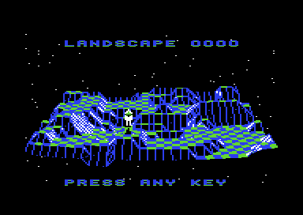
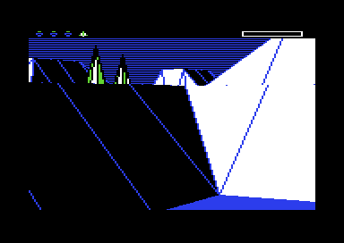

<meta charset="utf-8">
<meta name="viewport" content="width=device-width, initial-scale=1">
<title>The Sentinel</title>
<link rel="preconnect" href="https://fonts.googleapis.com">
<link rel="stylesheet" href="https://fonts.googleapis.com/css2?family=Lato:wght@400;700;900&family=IBM+Plex+Mono:wght@400;500&display=swap">
<style>
:root{
  --bg:#23262d; --paper:#e9e7e1; --surface:#ffffff; --surface-2:#f1efea; --line:#d5d3cc; --line-soft:#e0ded8;
  --ink:#2f3136; --ink-soft:#55585f; --ink-mute:#80838a;
  --link:#1f5fa8; --link-hover:#154480; --accent:#1f5fa8;
  --amber:#c25a00; --cyan:#1f5fa8; --coral:#d04a3a; --green:#2a8a4a; --violet:#4a5bd6; --hl:#fff0c2;
  --chip:#2f3136; --chip-ink:#ffffff;
  --c64blue:#40318d; --c64grey:#686868;
  --fd:'Lato',system-ui,sans-serif; --fb:'Lato',system-ui,sans-serif; --fm:'IBM Plex Mono',ui-monospace,Menlo,monospace;
  --col:1080px; --gx:68px; --fs:17px; --lh:1.6; --hw:900; --h1:46px; --h2:26px; --sy:48px; --pp:26px; --r:10px;
  --plate-shadow:0 1px 2px rgba(0,0,0,.05),0 4px 14px rgba(0,0,0,.05);
}
*{box-sizing:border-box}
html{background:var(--bg);min-height:100%}
body{background:var(--paper);color:var(--ink);font-family:var(--fb);font-size:var(--fs);line-height:var(--lh);max-width:var(--col);margin:0 auto;min-height:100vh;padding:0 0 4rem}
h1,h2,h3{font-weight:var(--hw);letter-spacing:-.01em;text-wrap:balance;color:var(--ink);margin:0}
h3{font-size:19px;margin:28px 0 8px}
.wrap{padding:0 var(--gx)}
.hero{padding:48px var(--gx) 8px;text-align:left}
.eyebrow{font-family:var(--fm);font-size:12px;letter-spacing:.08em;text-transform:uppercase;color:var(--ink-mute);margin:0 0 10px}
.hero h1{font-size:var(--h1);line-height:1.15;letter-spacing:-.02em;margin:0 0 14px}
.hero .sub{margin:0 0 .6em;color:var(--ink-soft)}
section{padding:var(--sy) 0 24px}
section:last-of-type{border-bottom:none}
.fig{font-family:var(--fm);font-size:12px;letter-spacing:.08em;text-transform:uppercase;color:var(--ink-mute);margin:0 0 10px}
h2.t{font-size:var(--h2);margin-bottom:12px}
.lede{color:var(--ink-soft);margin:0 0 30px}
.plate{background:var(--surface);border:1px solid var(--line);border-radius:var(--r);padding:var(--pp);box-shadow:var(--plate-shadow)}
.cap{font-size:14px;color:var(--ink-mute);margin-top:14px;line-height:1.55}
.cap b{color:var(--ink);font-weight:700}
code{font-family:var(--fm);font-size:.82em;background:var(--chip);color:var(--chip-ink);border-radius:4px;padding:2px 6px;white-space:nowrap}
a{color:var(--link)}
/* controls */
.ctl{display:flex;flex-wrap:wrap;gap:8px 14px;align-items:center;margin:0 0 14px;font-size:14px}
.ctl .grp{display:flex;gap:4px;align-items:center;flex-wrap:wrap}
.ctl label{color:var(--ink-soft)}
button.b{font:500 13px var(--fm);background:var(--surface-2);color:var(--ink);border:1px solid var(--line);border-radius:6px;padding:5px 10px;cursor:pointer}
button.b:hover{border-color:var(--ink-mute)}
button.b[aria-pressed="true"]{background:var(--chip);color:var(--chip-ink);border-color:var(--chip)}
input.num{font:500 18px var(--fm);width:5.2em;padding:4px 8px;border:1px solid var(--line);border-radius:6px;text-align:center;letter-spacing:.08em}
input[type=range]{width:220px}
canvas{max-width:100%;display:block}
.cv-dark{background:#000;border-radius:6px}
.cols{display:grid;grid-template-columns:minmax(0,1fr) 260px;gap:22px;align-items:start}
@media (max-width:880px){.cols{grid-template-columns:1fr}}
.stats{font-size:14px;line-height:1.5}
.stats dt{font-family:var(--fm);font-size:11px;letter-spacing:.06em;text-transform:uppercase;color:var(--ink-mute);margin-top:10px}
.stats dd{margin:0}
.code8{font:500 26px var(--fm);letter-spacing:.12em;color:var(--ink)}
.tip{position:absolute;pointer-events:none;background:var(--chip);color:#fff;font:12px/1.4 var(--fm);padding:6px 8px;border-radius:6px;white-space:nowrap;display:none;z-index:5}
.rel{position:relative}
.tablewrap{overflow-x:auto}
table.d{border-collapse:collapse;font-size:14px;width:100%;margin:6px 0}
table.d th,table.d td{text-align:left;padding:6px 10px;border-bottom:1px solid var(--line-soft);vertical-align:top}
table.d th{font-family:var(--fm);font-size:11px;letter-spacing:.06em;text-transform:uppercase;color:var(--ink-mute);font-weight:500}
.seq{display:flex;flex-wrap:wrap;gap:4px;font:12px var(--fm)}
.seq span{padding:2px 5px;border-radius:4px;background:var(--surface-2);border:1px solid var(--line-soft)}
.seq span.k{background:var(--hl);border-color:#e0c46a;font-weight:500}
.bars{display:flex;gap:6px;align-items:flex-end;height:120px;margin:10px 0 4px}
.bars div{flex:1;background:var(--accent);border-radius:3px 3px 0 0;position:relative}
.bars div span{position:absolute;bottom:-20px;left:0;right:0;text-align:center;font:12px var(--fm);color:var(--ink-soft)}
.cards{display:grid;grid-template-columns:repeat(auto-fit,minmax(280px,1fr));gap:16px}
.card{background:var(--surface);border:1px solid var(--line);border-radius:var(--r);padding:18px 20px;box-shadow:var(--plate-shadow)}
.card h3{margin:0 0 6px;font-size:17px}
.card p{margin:0 0 8px;font-size:15px}
.card.wide{grid-column:1/-1}
.card.wide .imgs figure{max-width:420px}
.imgs{display:flex;gap:14px;flex-wrap:wrap}
.imgs figure{margin:0;flex:1;min-width:220px}
.imgs img{width:100%;image-rendering:pixelated;border-radius:6px;display:block}
.imgs figcaption{font-size:13px;color:var(--ink-mute);margin-top:6px}
.mm text{font:11px var(--fm)}
.note{font-size:14px;color:var(--ink-soft)}
.unsure li{margin-bottom:6px}
</style>
<!-- tabs -->
<header class="hero">
  <p class="eyebrow">Commodore 64 · 1986 · Firebird</p>
  <h1>The Sentinel</h1>
  <p class="sub">The Commodore 64 version is Geoff Crammond's BBC Micro program moved across, most of it to the same addresses. It still calls the BBC Micro's operating system, which a small layer of C64 code answers, and it grows all 10,000 landscapes, and their secret codes, from one 40-bit number.</p>
</header>
<main class="wrap">

<section id="landscapes">
  <p class="fig">01 · The landscape generator</p>
  <h2 class="t">All 10,000 landscapes, and their secret codes</h2>
  <p class="lede">No landscape is stored. The game grows each one from its four-digit number, and the same arithmetic gives the eight-digit code that unlocks it. This is that arithmetic, ported from the game's code: pick a number.</p>
  <div class="plate">
    <div class="ctl">
      <div class="grp"><label for="ln">Landscape</label>
        <button class="b" id="lnPrev" title="previous landscape">−</button>
        <input class="num" id="ln" value="0000" maxlength="4" inputmode="numeric" aria-label="landscape number">
        <button class="b" id="lnNext" title="next landscape">+</button>
        <button class="b" id="lnRand">Random</button></div>
      <div class="grp"><label>View</label>
        <button class="b" id="vOver" aria-pressed="true">From the front</button>
        <button class="b" id="vMap" aria-pressed="false">From above</button></div>
      <div class="grp"><button class="b" id="hidden" aria-pressed="false">Add the player and the trees</button></div>
    </div>
    <div class="cols">
      <div class="rel">
        <canvas id="land" class="cv-dark" width="640" height="400"></canvas>
        <div class="tip" id="landTip"></div>
        <div class="ctl" style="margin:12px 0 0">
          <div class="grp"><label>Stage</label>
            <button class="b stg" data-s="noise" aria-pressed="false">1 Numbers</button>
            <button class="b stg" data-s="averaged" aria-pressed="false">2 Averaged</button>
            <button class="b stg" data-s="scaled" aria-pressed="false">3 Scaled</button>
            <button class="b stg" data-s="despiked" aria-pressed="false">4 Levelled</button>
            <button class="b stg" data-s="final" aria-pressed="true">5 Tiles and objects</button>
            <button class="b" id="stgPlay">Play</button></div>
        </div>
      </div>
      <dl class="stats" id="landStats"></dl>
    </div>
    <p class="cap" id="landCap">Drawn by this page from the port's output. The camera stands where the game puts it for its overview (object 16, 15 tiles across, 33 units up and 62 tiles in front, looking 31° down, set up at <code>$13AB</code>), but the page projects onto a flat screen, where the game works in angles through its arctangent tables, so the two pictures differ a little in shape. Flat tiles alternate the ground's first colour and blue by the parity of column and row, as <code>$2A4B</code> does; the page shades the slopes itself. The port matches the tiles, objects and variables of eight landscapes recorded in the emulator byte for byte, and all 10,000 codes of Simon Owen's published list. From above, hovering over a tile shows its byte in <code>$0400</code>-<code>$07FF</code>.</p>
    <div class="imgs" id="landRef" style="margin-top:14px"></div>
  </div>
  
<h3>One sequence of numbers</h3>
<p>Everything comes from a 40-bit shift register at <code>$0C7B</code>-<code>$0C7F</code>. When a
landscape is chosen, <code>$33ED</code> puts its number, in binary-coded decimal, into the low two
bytes, over a register the reset left as <code>00 00 01 00 00</code>. Each call of
<code>$31CA</code> shifts the register eight times, feeding in bit 3 of <code>$0C7D</code>
exclusive-or bit 0 of <code>$0C7F</code>, and returns <code>$0C7F</code>. The game then uses the
numbers in a fixed order, from the first hill to the last digit of the code, so one extra or
missing call would change everything after it. The port keeps that order, and the game's 8-bit
arithmetic, for the same reason.</p>

<h3>From numbers to hills</h3>
<p>The stage buttons under the picture step through the tile table as <code>$2ACC</code> builds
it.</p>
<div class="tablewrap"><table class="d">
<tr><th>Stage</th><th>What happens</th><th>Where</th></tr>
<tr><td>1 Numbers</td><td>81 numbers are drawn and set aside, then the steepness: 24 for landscape 0000, otherwise 14 plus a number from 0 to 22. Then every one of the 1,024 tile corners gets a number of its own.</td><td><code>$2ACC</code>, <code>$3451</code></td></tr>
<tr><td>2 Averaged</td><td>Each corner becomes the average of itself and the next three along its row, then along its column, and all of it twice. The rows wrap round, so the far edge is averaged with the near one.</td><td><code>$2B83</code>, <code>$2BBC</code></td></tr>
<tr><td>3 Scaled</td><td>Each value, less 128, is multiplied by the steepness and cut to an altitude from 1 to 11.</td><td><code>$2B22</code></td></tr>
<tr><td>4 Levelled</td><td>A corner higher than both neighbours drops to the higher of them; one lower than both rises to the lower. Rows, then columns, twice.</td><td><code>$2BBC</code></td></tr>
<tr><td>5 Tiles and objects</td><td>Each tile gets one of 15 shapes from its four corners, and each byte ends as altitude × 16 + shape. Then the objects go on.</td><td><code>$2C7C</code></td></tr>
</table></div>

<h3>The enemies, the player and the trees</h3>
<p>Landscape 0000 has the Sentinel alone. Elsewhere the number of enemies starts from the
thousands digit plus 2, moves up or down by a count of leading zero bits in a drawn number, and is
drawn again until it lands between 1 and 8 (<code>$3426</code>); below landscape 0100 it is also
held to the tens digit plus 1 (<code>$33ED</code>). The map is cut into 8 × 8 blocks of 4 × 4
tiles, and the enemies take the highest flat tiles, one per block, each chosen block ruling out
its eight neighbours (<code>$14FB</code>). The first enemy is the Sentinel, on its tower.</p>
<p>The overview is drawn at this point (<code>$8858</code>). Only then does the player's robot go
on a random empty flat tile, lower than every enemy and lower than altitude 6
(<code>$1450</code>), followed by the trees: 10 plus a number from 0 to 22, at most 48 minus
three per enemy, all below the lowest enemy (<code>$147D</code>). That order is why the game's
overview shows neither; the button above the picture adds them. Over all 10,000 landscapes,
building one takes 1,212 to 1,880 numbers from the sequence and leaves 10 to 32 trees.</p>
<p>The ground's two colours count the enemies: green and white for one, cyan and red for four,
yellow and red for eight (<code>$14D4</code>, <code>$14F3</code>).</p>

</section>

<section id="code">
  <p class="fig">02 · The secret entry code</p>
  <h2 class="t">The secret code is four more numbers from the same sequence</h2>
  <p class="lede">Once the landscape is built and populated, the game draws 43 more numbers and compares them with what was typed. Four of them are the code, which is why a code can be worked out for any landscape without playing it.</p>
  <div class="plate">
    <p class="note" id="codeHead"></p>
    <div class="seq" id="codeSeq"></div>
    <p class="cap">The 43 numbers of the check (<code>$14AA</code>) for the landscape chosen above. Each is a drawn byte with 6 taken off any nibble from 10 to 15, which turns it into two decimal digits (<code>$339A</code>). The four highlighted numbers meet the four bytes of the typed code; the result of each comparison is rotated into <code>$0C65</code>, and <code>$14DC</code> needs bits 1 to 4 set.</p>
  </div>
  
<h3>The traps around the check</h3>
<p>The BBC Micro version protects the check against anyone tracing it, and the C64 version keeps
every trap.</p>
<ul>
<li>The landscape builder is called from <code>$1071</code>, and the code after the call, from
<code>$1074</code>, puts up WRONG SECRET CODE. On the way the builder rewrites its own return
address on the stack (<code>$2C19</code>-<code>$2C26</code>), so it returns instead to
<code>$8817</code>, a <code>BMI</code> hidden in the operand of a <code>JMP</code>. That leads to
<code>$8858</code>, which places the enemies, draws the overview behind a blank screen, places the
player and the trees, and runs the check.</li>
<li>With a correct code, the check throws away its own return address and "returns" into the game at
<code>$356D</code>, an address worked out from the Sentinel's object flags
(<code>$14E5</code>-<code>$14F2</code>); the byte before it, <code>$356C</code>, is a decoy. A
wrong code simply returns, to <code>$886F</code>, which jumps to <code>$1074</code>.</li>
<li>The third number of every landscape is copied into the operand of an <code>LDA #</code> at
<code>$0F3C</code> that nothing jumps to (<code>$2C5C</code>). Playing sets <code>$0C75</code> to
that number plus 1 (<code>$18A2</code>). When the game shows the next landscape's code, each of
its 3D digits compares the two (<code>$322F</code>), and while <code>$0C75</code> is lower it
draws one extra number (<code>$31A2</code>), so a code shown without the landscape having been
played comes out wrong. Below landscape 0100 that third number is 0 and the test can never
fail.</li>
<li>A 43-byte stash of the check's numbers is written into page <code>$3F</code>
(<code>$14C7</code>) and read back later (<code>$254F</code>). On the BBC Micro that page is a
screen buffer; on the C64 it is the game's own start-up code, which has run by then.</li>
</ul>

  <div class="plate" style="margin-top:18px">
    <div class="bars" id="digitBars"></div>
    <p class="cap" style="margin-top:28px">The digits of all 10,000 codes, 80,000 in all, counted by the port. 0 to 3 turn up about 5,000 times each and 4 to 9 about 10,000: taking 6 off a nibble of 10 to 15 makes it 4 to 9, so those digits have two ways in.</p>
  </div>
  
<p>The codes are the BBC Micro's: Simon Owen's generator gives one list for the BBC Micro and the
Commodore 64, and it agrees with this port on all 10,000.</p>

</section>

<section id="sound">
  <p class="fig">03 · Sound</p>
  <h2 class="t">The BBC Micro's tunes, played on the SID</h2>
  <p class="lede">The music is the BBC version's own bytes. The C64 plays it through its own copy of the BBC's sound call, which turns an 8-byte block into SID registers, and a tick once a frame that does the work of the BBC's envelopes. Every tune and sound is below.</p>
  <div class="plate"><div id="music"></div><p class="cap">The game's sound driver, ported to JavaScript and played through the site's model of the SID. The port was held to the game's own code, run in a 6502 simulator on the analysed image: 20 runs, 4,718 frames, every SID register after every frame and every write in order, with no difference. The game runs its sound routine <code>$352C</code> from nine places in its code, wherever it happens to be; the port runs it once a frame. That is what happens where the transfer and hyperspace tunes play, but not everywhere, so in the game the U-turn's second chord and the notes of the game-over tune can come a little later than here.</p></div>
  
<h3>A sound is eight bytes</h3>
<p>The BBC code plays sound n by handing the block at <code>$AC00</code> + 8n to OSWORD 7, the
BBC operating system's sound call (<code>$3470</code>). The C64 answers that call with code of its
own (<code>$8DB4</code>, section 5 below), which reads the block like this:</p>
<div class="tablewrap"><table class="d">
<tr><th>Byte</th><th>What it sets</th></tr>
<tr><td>0</td><td>the voice, 0 to 2</td></tr>
<tr><td>1</td><td>the SID's control byte, written first without its gate so the envelope starts again</td></tr>
<tr><td>2, 3</td><td>attack and decay, sustain and release; the low nibble of byte 3 also picks a release time in frames (<code>$8EC1</code>)</td></tr>
<tr><td>4</td><td>the pitch, an index into the frequency tables at <code>$9033</code> and <code>$9133</code></td></tr>
<tr><td>5</td><td>the pulse width's high nibble; with bit 7 set, the frequency is halved (bits 4-6) + 1 times</td></tr>
<tr><td>6</td><td>frames before the gate is released, or <code>$80</code> and up to hold the note</td></tr>
<tr><td>7</td><td>a pitch effect: the offset of a 7-byte record at <code>$AC40</code>, or <code>$80</code> for none</td></tr>
</table></div>
<p>The interrupt then does the rest once a frame: <code>$8ED1</code> counts each note down, lets
go of the gate, and silences the voice when its release time has passed; <code>$8F0C</code> steps
the pitch effects, a change of pitch per frame in three sections. The three records are the pitch
half of the BBC version's envelopes 2 to 4, byte for byte, for the music, the scanner and the
ping.</p>
<p>The pitch is the BBC's too: 48 steps to the octave, quarter semitones. The C64's table holds
2100 × 2<sup>n/48</sup> for pitch n, which puts pitch 89, the BBC's A above middle C, at 446 Hz
on a PAL machine, about 1.3 % sharp.</p>

<h3>The tunes</h3>
<p>A tune (<code>$34DE</code>, bytes at <code>$AB50</code>) is a list of pitches. A byte of
<code>$C8</code> or more sets the wait after each following note to (byte − <code>$C8</code>) × 4
frames, and <code>$FF</code> ends the tune. Each note is played as sound 3 on the next voice in
turn, so three notes with no wait between them make a chord. Five places in the code start the
music, at five offsets:</p>
<div class="tablewrap"><table class="d">
<tr><th>Offset</th><th>When</th><th>Started at</th><th>Length</th></tr>
<tr><td>0</td><td>hyperspace</td><td><code>$2181</code></td><td>5.5 s</td></tr>
<tr><td>25</td><td>transfer</td><td><code>$1B82</code></td><td>5.5 s</td></tr>
<tr><td>40</td><td>U-turn: the last two chords of the transfer tune</td><td><code>$1B3C</code></td><td>4.1 s</td></tr>
<tr><td>50</td><td>game over</td><td><code>$87F6</code></td><td>6.5 s</td></tr>
<tr><td>66</td><td>landscape won</td><td><code>$3627</code></td><td>7.9 s</td></tr>
</table></div>
<p>The game-over screen adds a falling noise (<code>$352C</code>): sound 6, one frame long, from
pitch 230 down to 60, a step every one to four frames drawn from the game's random numbers. The
BBC version falls from 250 to 80.</p>

</section>

<section id="frame">
  <p class="fig">04 · The play screen</p>
  <h2 class="t">The view is drawn as a bitmap and shown as text</h2>
  <p class="lede">The drawing code writes a multicolour bitmap at <code>$E000</code>, and on the title screens that bitmap is what the screen shows. In play the screen shows multicolour text instead: the bitmap is copied into five character sets, and a raster interrupt switches between them every 40 lines.</p>
  <div class="plate">
    <div class="ctl"><div class="grp">
      <button class="b" id="fBands" aria-pressed="false">Show the five character sets</button>
      <button class="b" id="fGrid" aria-pressed="false">Show the character grid</button></div></div>
    <div class="rel"><canvas id="fcv" class="cv-dark" width="768" height="544"></canvas></div>
    <p class="cap" id="fcap">One frame of the first view of landscape 0000, drawn by the site's renderer from what the emulator recorded: the video registers, the five <code>$D018</code> writes and the memory the picture is made of. 0 of its 104,448 pixels differ from the emulator's own picture. The top row holds the energy (three robots and a tree: 10 units) and the frame of the scanner; the sights and the inside of the scanner are sprites.</p>
  </div>
  
<p>The 3D code draws only into the bitmap at <code>$E000</code>-<code>$FF3F</code>, 320 bytes to a
character row (<code>$3D83</code>, <code>$3DB5</code>). In play, <code>$979D</code> copies that
bitmap into five character sets at <code>$4000</code>, <code>$4800</code>, <code>$5000</code>,
<code>$5800</code> and <code>$6000</code>, one for each band of 40 lines. The screen matrix at
<code>$7C00</code> holds the character codes 0 to 239 in order, over and over
(<code>$9AAC</code>); only the top row differs, with the energy row's characters 240 to 249
(<code>$9508</code>). A band covers five character rows and part of a sixth, and 240 characters
are six rows of 40, so each set holds exactly what its band shows. The raster interrupt at
<code>$95E9</code> runs five times a frame and points <code>$D018</code> at the next set each time
(<code>$9589</code>, <code>$958E</code>).</p>
<p>The switches fall in the middle of character rows 0, 5, 10, 15 and 20, the dashed rows above,
so the game copies those rows into two sets (<code>$3A40</code>). The five sets also form a
circular screen: <code>$94</code> and <code>$95</code> hold the column and row where it starts, and a
step of a pan moves them (<code>$96A6</code>).</p>
<p>The character sets double as scratch memory. Before a full redraw the screen goes blue
(<code>$358D</code>), and the visibility pass builds its tables of corner heights in the character sets themselves,
<code>$4000</code>-<code>$5F3E</code> (<code>$25C4</code>), before the new view is copied over
them (<code>$98B2</code>).</p>

</section>

<section id="bbc">
  <p class="fig">05 · A BBC Micro program</p>
  <h2 class="t">Inside, it is still a BBC Micro program</h2>
  <p class="lede">Long stretches of the C64 code are byte for byte the BBC Micro original, most of them at the same addresses. What the BBC code expects of its machine, the C64 version supplies itself.</p>
  <div class="plate">
    <div class="rel"><svg id="mm" class="mm" viewBox="0 0 880 560" width="100%" role="img" aria-label="BBC Micro and Commodore 64 memory maps"></svg></div>
    <p class="cap" id="mmCap">Where each part of the BBC Micro program ended up; hover over a band. The BBC side comes from Mark Moxon's reconstruction of the BBC version. A ten-byte window of its code found exactly once in the C64 image places 10,751 of its 23,534 code bytes (most of the others differ only in addresses that moved), and 556 of its 885 code labels land on the same instruction. Grey blocks are the C64's own.</p>
  </div>
  
<h3>The operating system, rebuilt</h3>
<p>A BBC Micro program prints, reads keys and makes sounds by calling the operating system at fixed
addresses at the top of memory. The C64 version's start-up code (<code>$8900</code>) writes six
<code>JMP</code>s at those same addresses, and the BBC code calls them unchanged.</p>
<div class="tablewrap"><table class="d">
<tr><th>Address</th><th>On the BBC Micro</th><th>On the C64</th></tr>
<tr><td><code>$FFEE</code></td><td>OSWRCH, print a character</td><td><code>$8A6B</code>: draws the BBC Micro's own 8 × 8 font, two cells wide, into the bitmap, and follows the BBC's control codes for colour and position; the bell is ignored, so the number entry's "buffer full" beep is silent</td></tr>
<tr><td><code>$FFE0</code></td><td>OSRDCH, read a key</td><td><code>$8D2C</code>: waits for the last key to be let go, then for a key, and returns its ASCII from <code>$8FF3</code> (<code>$8FB3</code> with SHIFT)</td></tr>
<tr><td><code>$FFF4</code></td><td>OSBYTE</td><td><code>$8F78</code>: two of the BBC's calls, test a key (<code>$81</code>) and silence a voice (<code>$15</code>); every other call returns at once</td></tr>
<tr><td><code>$FFF1</code></td><td>OSWORD</td><td><code>$8D81</code>: two calls, play a sound (7) and read a character's shape (<code>$0A</code>, which the title uses to build its 3D letters)</td></tr>
<tr><td><code>$FFC2</code>, <code>$FFC5</code></td><td>GSINIT and GSREAD, for reading strings</td><td><code>$8ED1</code> and <code>$8F0C</code>: the sound's two once-a-frame ticks</td></tr>
</table></div>
<p>Zero page kept its BBC addresses too, with one exception. The BBC version kept the enemy being
processed and the current object at <code>$00</code> and <code>$01</code>, which on the C64 are the
processor's own port, so they moved to <code>$90</code> and <code>$91</code>: BBC <code>LDX
$00</code> is C64 <code>$16B9 LDX $90</code>.</p>

<h3>The keys</h3>
<p>The table of the game's 15 keys at <code>$138D</code> is in the BBC's order, with C64 key
numbers, and the table beside it is the BBC's byte for byte. The BBC's COPY and DELETE, pause and
continue, became the two cursor keys. The key test (<code>$8CF9</code>) numbers a key by the bit
read on <code>$DC01</code> times 8 plus the line driven on <code>$DC00</code>, the transpose of the
C64's own numbering; it is the only code that reads the keyboard, and nothing reads a joystick.</p>
<div class="tablewrap"><table class="d">
<tr><th>Keys</th><th>Action</th></tr>
<tr><td>S, D / L, <code>,</code></td><td>pan left, right / up, down; with the sights on, move the sights</td></tr>
<tr><td>SPACE</td><td>sights on and off</td></tr>
<tr><td>A, Q, H, U</td><td>absorb, transfer, hyperspace, U-turn</td></tr>
<tr><td>T, B, R</td><td>create a tree, a boulder, a robot</td></tr>
<tr><td>CRSR ←→, CRSR ↑↓</td><td>pause, continue</td></tr>
<tr><td>7, 8</td><td>volume down, up, 16 steps</td></tr>
<tr><td>F1</td><td>abandon the game</td></tr>
</table></div>

</section>


<section id="clock">
  <p class="fig">06 · The enemies' clock</p>
  <h2 class="t">The Sentinel turns every 15 seconds, not 10</h2>
  <p class="lede">The enemies run on the BBC version's timers, but the C64 feeds them through a gate that lets 205 frames in 256 through. The Sentinel turns a fifth slower than on the BBC Micro, and slower than the ten seconds that guides to the game give.</p>
  <div class="plate">
    <div class="ctl">
      <div class="grp"><button class="b" id="ckPlay">Run</button><button class="b" id="ckStep">One frame</button><button class="b" id="ckFast" aria-pressed="false">× 10</button><button class="b" id="ckReset">Reset</button></div>
      <div class="grp"><label>Machine</label><button class="b" id="ckC64" aria-pressed="true">Commodore 64</button><button class="b" id="ckBBC" aria-pressed="false">BBC Micro</button></div>
    </div>
    <div class="cols">
      <canvas id="ckcv" width="420" height="300"></canvas>
      <dl class="stats" id="ckStats"></dl>
    </div>
    <p class="cap">A model of <code>$130C</code> and <code>$1317</code>. Each frame adds <code>$CD</code> to <code>$1335</code> and calls the timer routine on a carry; the routine counts the timers down on one call in three; the Sentinel's turn timer is set to 200 at <code>$1813</code>, and it turns by 20/256 of a circle, 28.1°, when the timer runs out. In the emulator, 1,000 frames gave 801 calls, and the Sentinel's heading went 112, 92, 72, 52 in steps of about 752 frames, 15.0 seconds.</p>
  </div>
  
<p>Nothing turns until the player does something. Bit 7 of <code>$0CE5</code> holds the timers and
the scanner still, and <code>$12E1</code> clears it on any action key, a U-turn or a hyperspace
included, even when the action then fails. Panning does not count. In the emulator the Sentinel
held its heading for 20 seconds while the player did nothing, and the timer routine was not called
once in 500 frames.</p>
<p>Being seen costs energy on the same clock. An enemy that can see the player waits 120 ticks
(<code>$1835</code>), then takes a unit every cycle of its tactics, whose timer is set to 30 ticks
(<code>$1848</code>), 2.2 seconds. The manual says a unit about every five seconds. In the
emulator the last two units went 2.6 seconds apart; what the other 0.4 seconds is has not been
traced.</p>

</section>

<section id="energy">
  <p class="fig">07 · Energy</p>
  <h2 class="t">Energy, and a sentry worth 3</h2>
  <p class="lede">The player's energy is one byte, <code>$0C0A</code>. The row of icons at the top of the screen is built from it by subtraction: 15 at a time, then 3, then what is left.</p>
  <div class="plate">
    <div class="ctl"><div class="grp"><label for="en">Energy</label><input type="range" id="en" min="0" max="63" value="10"><b id="enV" style="font-family:var(--fm)">10</b></div></div>
    <canvas id="encv" class="cv-dark" width="960" height="48"></canvas>
    <p class="cap">The top row as <code>$9508</code> writes it for the energy on the slider, drawn from the ten characters at <code>$ABB0</code> in landscape 0000's colours: a gold robot for each 15 units, a robot for each 3, then a tree for 1 or a boulder for 2, and the scanner's frame from column 29. In the emulator, 10 units showed three robots and a tree, 9 three robots, 8 two robots and a boulder, 5 a robot and a boulder.</p>
  </div>
  
<div class="tablewrap"><table class="d">
<tr><th>Object</th><th>Units (<code>$214F</code>)</th><th>The wiki's figure</th></tr>
<tr><td>Robot</td><td>3</td><td>3</td></tr>
<tr><td>Sentry</td><td><b>3</b></td><td>4</td></tr>
<tr><td>Tree</td><td>1</td><td>1</td></tr>
<tr><td>Boulder</td><td>2</td><td>2</td></tr>
<tr><td>Meanie</td><td>1</td><td>1</td></tr>
<tr><td>The Sentinel</td><td>4</td><td>4</td></tr>
<tr><td>Its tower</td><td>0</td><td></td></tr>
</table></div>
<p>Absorbing adds the table's value (<code>$1B9E</code>). Creating takes it first and gives it back
if the object cannot be placed (<code>$1BBA</code>, <code>$1BD5</code>); in the emulator T, A, B
and R took the energy from 10 to 9, 10, 8 and 5. A hyperspace costs 3 units, and without them the
game ends (<code>$2156</code>). The BBC version's table gives a sentry 3 as well.</p>
<p>The byte is kept to six bits (<code>AND #$3F</code> at <code>$2148</code>), so 64 units would
read as none. It cannot happen: by the placement rules no landscape holds more than 62 units in
all, counting the player's 10 and the robot they start in. The most is landscape 0340, with the
Sentinel, seven sentries and 24 trees.</p>

</section>

<section id="secrets">
  <p class="fig">08 · Secrets, quirks and leftovers</p>
  <h2 class="t">Eight things found in the code</h2>
  <p class="lede">Each of these is in the code at the address given; the ones marked live were also seen in the emulator.</p>
  
<div class="cards">
<div class="card wide"><h3>The overview leaves out the player and the trees</h3>
<p>The landscape is shown from above before the player's robot and the trees are placed
(<code>$8858</code>, then <code>$1450</code> and <code>$147D</code>), so the overview never shows
them. Live: the overview of landscape 0000 has the Sentinel and no trees; the first view from the
robot has trees in it.</p>
<div class="imgs"><figure><figcaption>The overview</figcaption></figure><figure><figcaption>The first view: two trees</figcaption></figure></div></div>

<div class="card"><h3>Past landscape 9999, the count starts again</h3>
<p>The next landscape is the current number plus the energy left, added in binary-coded decimal
(<code>$1A87</code>-<code>$1A95</code>). The carry out of the top digit is dropped, so 9990 with 15
units left leads to 0005.</p>
<p id="nextForm" style="font-family:var(--fm);font-size:14px;line-height:2.2">Landscape <input class="num" id="nxL" value="9990" style="font-size:14px;width:4.4em"> + energy <input class="num" id="nxE" value="15" style="font-size:14px;width:3em"><br>next landscape <b id="nxOut"></b></p></div>

<div class="card"><h3>Zero is printed as the letter O</h3>
<p>The digit printer swaps 0 for O (<code>$31F6</code>), in the number entry too. Live: every
prompt and every code the game prints. The code of the landscape chosen above, as the game prints
it (white) and with the font's own zero (yellow):</p>
<canvas id="ocv" width="496" height="32" class="cv-dark"></canvas></div>

<div class="card"><h3>A U-turn plays the end of the transfer tune</h3>
<p>The transfer tune starts at offset 25 of the music (<code>$1B82</code>); the U-turn starts the
same tune at offset 40 (<code>$1B3C</code>), its last two chords. Live: a stop on the tune starter,
<code>$888F</code>, caught the U-turn with 40 in A. Both are in the sound player above.</p></div>

<div class="card"><h3>Any action wakes the enemies, even one that fails</h3>
<p>The enemies wait until the first action key: absorb, create, transfer, hyperspace or U-turn
(<code>$12E1</code>). The key counts before the action is tried, so a refused creation wakes them
too. Panning never does. Live, with a U-turn.</p></div>

<div class="card"><h3>BBC BASIC, inside a C64 game</h3>
<p>The gaps between the C64's tables hold pieces of BBC BASIC's own code, at the addresses BASIC
occupies in a BBC Micro: SQR at <code>$A7B4</code>, whose <code>BMI</code> reaches the error "-ve
root" at <code>$A7A9</code>; the range reduction for SIN and COS at <code>$A9D3</code>, reaching
"Accuracy lost" at <code>$AA38</code>; log<sub>10</sub> e and ln 2 in BASIC's five-byte form at
<code>$A869</code> and <code>$A86E</code>. Nothing in the game reads them. At BBC addresses the gaps
are where the BBC version keeps screen-buffer rows and the routines the C64 moved elsewhere.</p></div>

<div class="card"><h3>Four font characters nobody sees</h3>
<p>At start-up <code>$89C5</code> patches four characters of the BBC font, <code>]</code>,
<code>_</code>, <code>{</code> and <code>|</code>, into an arrow, a centred dash and two blocks.
The game never prints any of them.</p></div>

<div class="card"><h3>The BBC's beep is gone</h3>
<p>The number entry sends the BBC's bell code when the field is full (<code>$3319</code>). The C64's
copy of the print routine ignores that code, so the C64 version stays silent.</p></div>
</div>

</section>

<section id="missing">
  <p class="fig">09 · The copy analysed</p>
  <h2 class="t">This copy is missing the 1.5 KB that scrolls the view</h2>
  
<p>The copy analysed here is a freezer-cartridge backup, a snapshot of the running game saved to
disk, not the original release. Two parts of memory did not survive. The top 192 bytes,
<code>$FF40</code>-<code>$FFFF</code>, the interrupt vectors and the six <code>JMP</code>s above,
the game writes itself when it starts, so the backup plays when it is restarted at the game's own
entry, <code>$3F00</code>.</p>
<p>The other, <code>$B000</code>-<code>$B5FF</code>, is code. The game calls <code>$B006</code>
once for each step of a pan (<code>$367C</code>), after moving the screen's circular origin
(<code>$96A6</code>). Nothing else in memory rewrites the screen matrix for a moved origin, or
recomputes the lines of the five bands, which <code>$9595</code> does only when the whole view is
redrawn, so that must be at least part of what the missing code does. With an <code>RTS</code>
there, as a test, the game plays on and a pan leaves the picture as it was until the next full
redraw. A track-by-track image of the original disk was tried as well; its track 25, where the
loader starts reading, is damaged. The About tab has the details.</p>

</section>

<section id="unsure">
  <p class="fig">What is still unknown</p>
  
<ul class="unsure">
<li>What <code>$B000</code>-<code>$B5FF</code> does beyond scrolling the view, and whether it
uses the unread table of row starts at <code>$3A60</code> or the multicolour picture at
<code>$6800</code>-<code>$6FFF</code> and <code>$7100</code>-<code>$7BFF</code> that nothing else
reads.</li>
<li>Why a unit drained in 2.6 seconds when the timers read give 2.2.</li>
<li>How BBC BASIC's own code came to fill the gaps of the C64 program.</li>
</ul>

</section>

</main>
<footer style="margin:16px 0 0;padding:22px var(--gx) 0;border-top:1px solid #e0ded8;font-family:'IBM Plex Mono',ui-monospace,Menlo,monospace;font-size:12px;color:#80838a"><a href="/kit.html" style="color:#1f5fa8;text-decoration:none">Kit changelog</a> · <a href="https://github.com/gamesexplained/gamesexplained" style="color:#1f5fa8;text-decoration:none">GitHub</a> · <a href="https://discord.gg/3V9GWyRDWV" style="color:#1f5fa8;text-decoration:none">Discord</a><br>© Games Explained contributors. Write-ups, facts and symbol maps are available under <a href="https://creativecommons.org/licenses/by-sa/4.0/" style="color:#1f5fa8;text-decoration:none">CC BY-SA 4.0</a>; code under <a href="https://opensource.org/licenses/MIT" style="color:#1f5fa8;text-decoration:none">MIT</a></footer>
<script src="../../lib/c64.js"></script>
<script src="../../lib/sid.js"></script>
<script>
/* The landscape generator, the enemy, player and tree placement and the secret code,
   ported from the game's 6510 code (see facts.md, "Landscape generation"). */
/*
 * The Sentinel (Commodore 64, Firebird 1986): the landscape generator,
 * the enemy, player and tree placement, and the secret entry code,
 * ported to plain JavaScript from the game's own 6510 code.
 *
 * Each function names the C64 routine it ports, by address in the image
 * the analysis used (games/c64/the-sentinel/orientation.md). The port keeps
 * the game's data layouts, its 8-bit arithmetic and its order of work,
 * because the pseudo-random sequence is shared by every step: a single
 * extra or missing draw changes everything that follows.
 *
 * Usage, in node:     const S = require('./landscape.js');
 * In this page:       window.SentinelLandscape
 *
 *   S.generate(1234)         the landscape as the game leaves it on the overview screen
 *   S.secretCode(1234)       '########', the eight digits the game asks for
 *   S.tileIndex(x, z)        offset of tile corner (x, z) in the 1 KB tile table
 *
 * No dependencies. Written for this repository; not the game's text.
 */
(function (root, factory) {
  'use strict';
  var api = factory();
  if (typeof module === 'object' && module.exports) { module.exports = api; }
  else if (root) { root.SentinelLandscape = api; }
}(typeof globalThis !== 'undefined' ? globalThis : (typeof window !== 'undefined' ? window : this), function () {
  'use strict';

  var OBJECT_TYPE_NAMES = ['robot', 'sentry', 'tree', 'boulder', 'meanie', 'sentinel', 'tower'];

  // Where the game keeps each table. The port uses these only to label its
  // output and to let a test line the result up with a memory dump.
  var ADDRESSES = {
    tileData: 0x0400,          // 1024 bytes, one per tile corner (see tileIndex)
    xObject: 0x0900,           // 64 bytes each: one entry per object number
    yObjectHi: 0x0940,
    zObject: 0x0980,
    objectYawAngle: 0x09C0,
    yObjectLo: 0x0A00,
    objectTypes: 0x0A40,
    objectFlags: 0x0100,       // page 1, below the stack
    objectPitchAngle: 0x0140,
    seedRegister: 0x0C7B,      // five bytes, $0C7B (input end) to $0C7F (output end)
    stripData: 0xAD00,         // work area of the smoothing passes
    blockAltitude: 0xAE10,     // 64 bytes: highest flat tile of each 4 x 4 block
    blockX: 0xAE60,
    blockZ: 0xAEA0,
    enemyYawStep: 0x9D37       // 8 bytes, one per enemy
  };

  // ---------------------------------------------------------------------
  // Tile addressing
  // ---------------------------------------------------------------------

  // $2BA8: the game finds tile corner (x, z) at page 4 + (x mod 4), offset
  // 32 * (x div 4) + z. Each page therefore holds every fourth column.
  // The C64 routine only computes the address; unlike the BBC Micro
  // routine it came from, it does not load the byte or compare it with
  // $C0, and each caller that needs the byte loads it (and compares it with
  // $C0) itself: $1257, $1601, $1F23, $2BD3, $2C7F and the rest.
  function tileIndex(x, z) {
    return ((x & 3) << 8) | ((x & 0x1C) << 3) | (z & 0x1F);
  }

  function hex2(v) { return (v < 16 ? '0' : '') + v.toString(16).toUpperCase(); }

  // ---------------------------------------------------------------------
  // The machine state the generator touches
  // ---------------------------------------------------------------------

  function newState(options) {
    var s = {
      lfsr: new Uint8Array(5),          // [0] = $0C7B ... [4] = $0C7F
      seedCount: 0,                     // how many 8-bit numbers have been drawn
      tiles: new Uint8Array(1024),      // $0400-$07FF, memory order
      xObject: new Uint8Array(64),
      yObjectHi: new Uint8Array(64),
      zObject: new Uint8Array(64),
      objectYawAngle: new Uint8Array(64),
      yObjectLo: new Uint8Array(64),
      objectTypes: new Uint8Array(64),
      objectFlags: new Uint8Array(64),
      objectPitchAngle: new Uint8Array(64),
      strip: new Uint8Array(256),       // $AD00-$ADFF
      blocks: new Uint8Array(256),      // $AE00-$AEFF ($AE10, $AE60, $AEA0 tables)
      enemyYawStep: new Uint8Array(8),  // $9D37
      enemyTacticTimer: new Uint8Array(8),   // $0C30
      meanieA: new Uint8Array(8),       // $0C80
      meanieB: new Uint8Array(8),       // $0C90
      meanieC: new Uint8Array(8),       // $0C98
      meanieD: new Uint8Array(8),       // $0CA0
      // single variables, zero page and page $0C
      xTile: 0, zTile: 0,               // $24, $26
      tileAltitude: 0,                  // $06
      counter15: 0,                     // $15
      processAction: 0,                 // $1C
      smoothingAction: 0,               // $66
      treeCounter: 0,                   // $1E
      mask27: 0, count74: 0, u75: 0,    // $27, $74, $75
      enemyCounter: 0,                  // $6E
      currentObject: 0,                 // $91 on the C64 ($01 on the BBC Micro)
      playerObject: 0,                  // $0B
      playerEnergy: 0,                  // $0C0A
      objectType: 0,                    // $0C61
      landscapeNumberLo: 0, landscapeNumberHi: 0,   // $0CFD, $0CFE (BCD)
      landscapeZero: 0,                 // $0C52
      maxNumberOfEnemies: 0,            // $0C07
      tileDataMultiplier: 0,            // $0C08
      numberOfEnemies: 0,               // $0C6F
      minEnemyAltitude: 0,              // $0C06
      xTileSentinel: 0, zTileSentinel: 0,   // $0C19, $0C1A
      secretCodeChecks: 0,              // $0C65
      crackerSeed: 0,                   // operand of the LDA # at $0F3C
      stashOffset: null,                // $0C55, set while the overview is drawn
      codeSequence: [],                 // the 43 BCD numbers CheckSecretCode draws
      treeLimitsUsed: [],
      stages: options && options.stages ? {} : null
    };
    return s;
  }

  // ---------------------------------------------------------------------
  // The pseudo-random sequence
  // ---------------------------------------------------------------------

  // $31CA: the number generator is a 40-bit shift register in $0C7B-$0C7F.
  // Each call shifts it left eight times; the bit fed in at the bottom is
  // bit 3 of $0C7D exclusive-or bit 0 of $0C7F. The call returns $0C7F.
  // (Y is saved in $31F2 and restored; the port has no registers to save.)
  function nextSeed(s) {
    var r = s.lfsr;
    for (var i = 0; i < 8; i++) {
      var carry = ((r[2] >> 3) ^ r[4]) & 1;
      for (var j = 0; j < 5; j++) {
        var v = (r[j] << 1) | carry;
        carry = v >> 8;
        r[j] = v & 0xFF;
      }
    }
    s.seedCount++;
    return r[4];
  }

  // $1272: draw numbers until one, reduced to its low five bits, is not 31.
  // Gives a tile coordinate from 0 to 30 (a tile's anchor corner).
  function nextSeed0To30(s) {
    var a;
    do { a = nextSeed(s) & 0x1F; } while (a >= 0x1F);
    return a;
  }

  // $3451: one number r becomes (r >> 3 & 15) + (r & 7): 0 to 22, weighted
  // towards the middle. Uses $74 as scratch, as the game does.
  function nextSeed0To22(s) {
    var r = nextSeed(s);
    s.count74 = r & 7;
    return ((r >> 3) & 0x0F) + s.count74;
  }

  // $339A: one number made into two decimal digits by taking 6 off any
  // nibble of 10 or more ($A-$F become 4-9). Returns the byte in BCD.
  function nextSeedAsBCD(s) {
    var r = nextSeed(s);
    var lo = r & 0x0F; if (lo >= 10) lo -= 6;
    var hi = r & 0xF0; if (hi >= 0xA0) hi -= 0x60;
    return hi | lo;
  }

  // $33ED: seed the register with the landscape number. Before this runs,
  // the title loop's reset ($114D, falling into $1181) has cleared
  // $0C00-$0CE3 and then incremented $0C7D, so the register reads
  // 00 00 01 hi lo from the top. The routine also records the number,
  // whether it is 0000, and how many enemies it may have: one more than
  // the tens digit for 0000-0099, capped at eight, and eight from 0100 on.
  function initialiseSeeds(s, hi, lo) {
    s.lfsr[0] = lo; s.lfsr[1] = hi; s.lfsr[2] = 1; s.lfsr[3] = 0; s.lfsr[4] = 0;
    s.landscapeNumberHi = hi; s.landscapeNumberLo = lo;
    s.landscapeZero = hi;
    var a;
    if (hi !== 0) {
      a = 8;
    } else {
      s.landscapeZero = lo;
      a = (lo >> 4) + 1;
      if (a >= 9) a = 8;
    }
    s.maxNumberOfEnemies = a;
  }

  // ---------------------------------------------------------------------
  // 8-bit arithmetic helpers used by the altitude scaling
  // ---------------------------------------------------------------------

  // $0D03: unsigned 8 x 8 multiply, result high byte and low byte ($74).
  function multiply8x8(a, b) {
    var p = a * b;
    return { hi: (p >> 8) & 0xFF, lo: p & 0xFF };
  }

  // $1007: if the sign flag handed in is set, negate the 16-bit (A $74);
  // otherwise leave it alone.
  function absolute16Bit(negative, hi, lo) {
    if (!negative) return { hi: hi, lo: lo };
    var v = (0x10000 - ((hi << 8) | lo)) & 0xFFFF;
    return { hi: v >> 8, lo: v & 0xFF };
  }

  // ---------------------------------------------------------------------
  // Landscape generation
  // ---------------------------------------------------------------------

  // $2B22: visit every tile corner, z from 31 down to 0 and within each
  // row x from 31 down to 0, and do one of four things to its byte:
  //   $00  clear it (not used in generation)
  //   $80  replace it with the next number of the sequence
  //   $01  scale it: (value - 128) times the multiplier in $0C08, keep the
  //        high byte, add 6, floor at 0, add 1, cap at 11 (altitudes 1-11)
  //   $02  swap its nibbles
  function processTileData(s, action) {
    s.processAction = action;
    for (var z = 31; z >= 0; z--) {
      s.zTile = z;
      for (var x = 31; x >= 0; x--) {
        s.xTile = x;
        var i = tileIndex(x, z);
        var a;
        if (action === 0) {
          a = 0;
        } else if (action & 0x80) {
          a = nextSeed(s);
        } else if (action & 1) {
          var d = s.tiles[i];
          var diff = (d - 0x80) & 0xFF;           // SEC; SBC #$80
          var negative = (diff & 0x80) !== 0;     // PHP keeps this sign
          var mag = negative ? ((diff ^ 0xFF) + 1) & 0xFF : diff;
          s.u75 = mag;
          var m = multiply8x8(s.tileDataMultiplier, mag);
          var r = absolute16Bit(negative, m.hi, m.lo);
          a = (r.hi + 6) & 0xFF;
          if (a & 0x80) a = 0;                    // BPL fails: below zero
          a = a + 1;
          if (a >= 12) a = 11;
        } else {
          var t = s.tiles[i];
          a = ((t >> 4) | (t << 4)) & 0xFF;
        }
        s.tiles[i] = a;
      }
    }
  }

  // $2BBC: smooth one line of 32 tile corners (a row of constant z when
  // bit 7 of the action is clear, a column of constant x when it is set).
  // The line is copied to stripData as 35 bytes, wrapping round so that
  // entries 32-34 repeat 0-2.
  //   Bit 6 clear: each of the 32 entries becomes the average (rounded
  //     down) of itself and the next three, so the far edge averages with
  //     the near edge of the landscape.
  //   Bit 6 set: for entries 32 down to 1, any entry higher than both its
  //     neighbours drops to the higher of them, and any entry lower than
  //     both rises to the lower of them. Each change is seen by the next
  //     comparison. Entry 32 is the wrapped copy of entry 0 and is not
  //     copied back, so this pass never changes the first corner of a line
  //     (though a changed entry 32 still steers what happens to corner 31).
  // The averaging branch also stores stripData+78, the third number the
  // sequence gave for this landscape, into the operand at $0F3D (the
  // anti-cracker value), and the other branch rewrites the return address
  // at the top of the stack; neither touches the landscape.
  function smoothTileCorners(s, a) {
    var action = a | s.smoothingAction;
    s.processAction = action;
    var column = (action & 0x80) !== 0;
    var st = s.strip;
    var x;
    for (x = 0x22; x >= 0; x--) {
      if (column) s.zTile = x & 0x1F; else s.xTile = x & 0x1F;
      st[x] = s.tiles[tileIndex(s.xTile, s.zTile)];
    }
    if (action & 0x40) {
      for (x = 0x1F; x >= 0; x--) {
        var here = st[x + 1], prev = st[x + 2], next = st[x];
        if (here === prev) continue;
        if (here > prev) {
          if (here <= next) continue;
          st[x + 1] = (next < prev) ? prev : next;   // peak: take the higher neighbour
        } else {
          if (here >= next) continue;
          st[x + 1] = (prev < next) ? prev : next;   // pit: take the lower neighbour
        }
      }
      // $2C19: stack patch for the title loop's control flow (no data effect)
    } else {
      for (x = 0; x < 32; x++) {
        st[x] = (st[x] + st[x + 1] + st[x + 2] + st[x + 3]) >> 2;
      }
      // $2C5C: X is 32 here, so this copies $AD4E (stripData+78) to $0F3D
      s.crackerSeed = st[0x4E];
    }
    for (x = 0x1F; x >= 0; x--) {
      if (column) s.zTile = x; else s.xTile = x;
      s.tiles[tileIndex(s.xTile, s.zTile)] = st[x];
    }
  }

  // $2B83: two passes, each smoothing every row (z from 31 down to 0) and
  // then every column (x from 31 down to 0); the action byte is kept in $66
  // and chooses averaging ($00) or the removal of peaks and pits ($40).
  function smoothTileData(s, action) {
    s.smoothingAction = action;
    for (s.counter15 = 2; s.counter15 !== 0; s.counter15--) {
      var z, x;
      for (z = 31; z >= 0; z--) { s.zTile = z; smoothTileCorners(s, 0x00); }
      for (x = 31; x >= 0; x--) { s.xTile = x; smoothTileCorners(s, 0x80); }
    }
  }

  // $2C7C: the shape of the tile whose near-left corner is (x, z), from the
  // altitudes (low nibbles at this stage) of its four corners:
  //   a = (x, z), b = (x+1, z), c = (x+1, z+1), d = (x, z+1).
  // Shape 0 is flat; the others are the game's slope and ridge cases. The
  // comparisons follow the code's branch order exactly.
  function getTileShape(s, x, z) {
    var a = s.tiles[tileIndex(x, z)] & 0x0F;
    var b = s.tiles[tileIndex(x + 1, z)] & 0x0F;
    var c = s.tiles[tileIndex(x + 1, z + 1)] & 0x0F;
    var d = s.tiles[tileIndex(x, z + 1)] & 0x0F;
    if (a === b) {
      if (a === d) {                          // $2D07
        if (a === c) return 0;
        return a < c ? 10 : 3;
      }
      if (c === d) return c < b ? 1 : 9;      // $2CFE
      if (c !== b) return 12;
      return c < d ? 6 : 15;
    }
    if (a === d) {                            // $2CC8
      if (c === b) return c < d ? 5 : 13;     // $2CDE
      if (c === d) return c < b ? 14 : 7;     // $2CD5
      return 4;
    }
    if (c === b) {                            // $2CBB
      if (c !== d) return 4;
      return c >= a ? 2 : 11;
    }
    return 12;
  }

  // $2ACC: build the tile table.
  //  1. Draw 81 numbers into stripData+80 down to stripData+0. Only the
  //     third is used later (the anti-cracker value); the rest just move
  //     the sequence on.
  //  2. The multiplier: 24 for landscape 0000, otherwise 14 plus a draw
  //     from 0 to 22 (so 14 to 36). Stored in $0C08.
  //  3. Fill all 1024 corners with raw numbers, average twice along rows
  //     and columns, scale to altitudes 1-11, flatten peaks and pits twice.
  //  4. Work out each tile's shape (z and x from 30 down to 0; the last
  //     row and column anchor no tile and keep shape 0) into the high
  //     nibble, then swap nibbles so that each byte reads altitude * 16 +
  //     shape. Bits 6 and 7 are then never both set, which frees $C0-$FF
  //     to mean "an object stands here".
  // When bit 7 of $0C71 is clear the return address at the top of the
  // stack has been rewritten on the way ($2C19) to $8816, so the final RTS
  // lands on $8817, a BMI that is always taken (the last DEC in $2B22
  // leaves the sign set), into the overview at $8858, not back to $1074.
  function generateLandscape(s) {
    var x, z;
    for (x = 80; x >= 0; x--) s.strip[x] = nextSeed(s);
    if (s.landscapeZero === 0) {
      s.tileDataMultiplier = 24;
    } else {
      s.tileDataMultiplier = (nextSeed0To22(s) + 14) & 0xFF;
    }
    processTileData(s, 0x80);
    snap(s, 'noise');
    smoothTileData(s, 0x00);
    snap(s, 'averaged');
    processTileData(s, 0x01);
    snap(s, 'scaled');
    smoothTileData(s, 0x40);
    snap(s, 'despiked');
    for (z = 30; z >= 0; z--) {
      s.zTile = z;
      for (x = 30; x >= 0; x--) {
        s.xTile = x;
        var shape = getTileShape(s, x, z);
        var i = tileIndex(x, z);
        s.tiles[i] = ((shape << 4) | s.tiles[i]) & 0xFF;
      }
    }
    processTileData(s, 0x02);
    snap(s, 'final');
  }

  function snap(s, name) {
    if (s.stages) s.stages[name] = new Uint8Array(s.tiles);
  }

  // ---------------------------------------------------------------------
  // Objects
  // ---------------------------------------------------------------------

  // $211D: take the highest free object number (bit 7 of its flags set),
  // searching down from 63, and record the type asked for. The number is
  // not marked as used here; placing the object does that. Returns -1
  // (carry set) when all 64 are taken. On the C64 the number is kept in
  // $91; the BBC Micro keeps it in $01. $00 and $01 are the 6510's
  // processor port on the C64, and both variables the BBC kept there
  // moved: this one to $91, the enemy number to $90 (e.g. $198B).
  function getObjectNumber(s, type) {
    s.objectType = type;
    for (var x = 63; x >= 0; x--) {
      if (s.objectFlags[x] & 0x80) {
        s.currentObject = x;
        s.objectTypes[x] = type;
        return x;
      }
    }
    return -1;
  }

  // $1F16: put object n on the tile (xTile, zTile). The x and z are written
  // first, whatever happens. If the tile already holds an object, the new
  // one can only go on top of a boulder (half a unit higher) or of the
  // Sentinel's tower (one unit higher, keeping the tower's low byte); on
  // anything else the call fails with carry set. On bare ground the object
  // stands at the corner's altitude with low byte $E0. The tile byte then
  // becomes $C0 + n, the pitch $F5, and the yaw a draw rounded down to a
  // multiple of 8, plus $60.
  function spawnObjectOnTile(s, n) {
    s.xObject[n] = s.xTile;
    s.zObject[n] = s.zTile;
    var i = tileIndex(s.xTile, s.zTile);
    var t = s.tiles[i];
    var yHi;
    if (t >= 0xC0) {
      var below = t & 0x3F;
      var type = s.objectTypes[below];
      if (type !== 3 && type !== 6) return false;
      s.objectFlags[n] = below | 0x40;
      if (type === 6) {
        s.yObjectLo[n] = s.yObjectLo[below];
        yHi = (1 + s.yObjectHi[below]) & 0xFF;
      } else {
        var lo = s.yObjectLo[below] + 0x80;
        s.yObjectLo[n] = lo & 0xFF;
        yHi = (s.yObjectHi[below] + (lo >> 8)) & 0xFF;
      }
    } else {
      s.objectFlags[n] = 0;
      s.yObjectLo[n] = 0xE0;
      yHi = t >> 4;
    }
    s.yObjectHi[n] = yHi;
    s.tiles[i] = (n | 0xC0) & 0xFF;
    s.objectPitchAngle[n] = 0xF5;
    s.objectYawAngle[n] = ((nextSeed(s) & 0xF8) + 0x60) & 0xFF;
    return true;
  }

  // $1238: try random anchor tiles (two 0-30 draws each, x then z) for
  // object n until one is empty, flat and lower than the limit. After 255
  // failures the limit goes up by one, then again after every further 256;
  // once it would reach 12 the call gives up with carry set.
  function spawnObjectBelow(s, n, limit) {
    s.tileAltitude = limit & 0xFF;
    s.counter15 = 0;
    for (;;) {
      s.counter15 = (s.counter15 - 1) & 0xFF;
      if (s.counter15 === 0) {
        s.tileAltitude = (s.tileAltitude + 1) & 0xFF;
        if (s.tileAltitude >= 12) return false;
      }
      s.xTile = nextSeed0To30(s);
      s.zTile = nextSeed0To30(s);
      var t = s.tiles[tileIndex(s.xTile, s.zTile)];
      if (t >= 0xC0) continue;
      if (t & 0x0F) continue;
      if ((t >> 4) >= s.tileAltitude) continue;
      spawnObjectOnTile(s, n);
      return true;
    }
  }

  // $15CC: split the landscape into 8 x 8 blocks of 4 x 4 anchor tiles (the
  // last block in each direction covers 3, since corner 31 anchors no
  // tile). For each block record the altitude * 16 of its highest flat
  // tile ($AE10+b, 0 if it has none) and where that tile is ($AE60+b,
  // $AEA0+b); among equal heights the last one scanned wins (z outer, x
  // inner, both upwards). $06 ends as the highest of them all.
  function getHighestTiles(s) {
    var bl = s.blocks;
    s.tileAltitude = 0;
    for (var b = 0; b < 64; b++) {
      var xs = (b & 7) << 2;
      var zs = (b & 0x38) >> 1;
      bl[0x10 + b] = 0;
      var zc = 4;
      s.zTile = zs;
      if (zs >= 0x1C) zc--;
      do {
        var xc = 4;
        s.xTile = xs;
        if (xs >= 0x1C) xc--;
        do {
          var t = s.tiles[tileIndex(s.xTile, s.zTile)];
          if ((t & 0x0F) === 0) {
            var alt = t & 0xF0;
            if (alt >= bl[0x10 + b]) {
              bl[0x10 + b] = alt;
              if (alt >= s.tileAltitude) s.tileAltitude = alt;
              bl[0x60 + b] = s.xTile;
              bl[0xA0 + b] = s.zTile;
            }
          }
          s.xTile = (s.xTile + 1) & 0xFF;
          xc--;
        } while (xc !== 0);
        s.zTile = (s.zTile + 1) & 0xFF;
        zc--;
      } while (zc !== 0);
    }
  }

  // $159D: list (at $AD40) the blocks whose highest flat tile is at the
  // altitude in $06, scanning from block 63 down. Returns false (carry
  // set) if there are none; otherwise sets the count ($74) and a mask ($27)
  // of all ones up to the count's top bit, used to draw an index.
  function getTilesAtAltitude(s) {
    var y = 0;
    for (var b = 63; b >= 0; b--) {
      if (s.blocks[0x10 + b] === s.tileAltitude) s.strip[0x40 + y++] = b;
    }
    if (y === 0) return false;
    s.count74 = y;
    var lead = 0;
    while (!((y << lead) & 0x80)) lead++;
    s.mask27 = 0xFF >> lead;
    return true;
  }

  // $1973: clear enemy n's meanie-search state ($0C80, $0C90, $0C98, $0CA0).
  function resetMeanieScan(s, n) {
    s.meanieD[n] = 0x80;
    s.meanieB[n] = 0x80;
    s.meanieC[n] = 0x00;
    s.meanieA[n] = 0x40;
  }

  // $14FB: place the enemies, highest first. Enemy k is object k. For each
  // one: find the blocks whose highest flat tile is at the current height,
  // stepping the height down by one when there are none (and stopping, with
  // fewer enemies than asked, if it reaches 0); draw one of those blocks
  // (masked draws, redrawn until below the count); zero the recorded height
  // of that block and its eight neighbours, so the next enemy goes
  // elsewhere; and stand the enemy on the block's highest flat tile. The
  // neighbours are found by adding -9, -8, -7, -1, +1, +7, +8, +9 to the
  // index in the flat 8-per-row table, so for a block on the right edge the
  // three "right-hand" neighbours are the left-edge blocks of its own row
  // and the next two, and the left edge mirrors that; in the first and last
  // rows the stores land up to nine bytes outside the table ($AE07-$AE0F,
  // $AE50-$AE58), where nothing reads them. Enemy 0 is
  // the Sentinel: first its tower (a fresh object, facing yaw 0) goes on
  // the tile, then the Sentinel on the tower. Every enemy then gets a
  // tactic timer of (r >> 1 & 63) | 5 and a turning step of +20 or -20 from
  // bit 0 of one more draw. $0C06 ends as the last enemy's altitude.
  function addEnemiesToTiles(s) {
    getHighestTiles(s);
    var x = 0;
    for (;;) {
      s.enemyCounter = x;
      s.objectTypes[x] = 1;
      var exhausted = false;
      while (!getTilesAtAltitude(s)) {
        s.tileAltitude = (s.tileAltitude - 0x10) & 0xFF;
        if (s.tileAltitude === 0) { exhausted = true; break; }
      }
      if (exhausted) { s.numberOfEnemies = x; break; }
      var idx;
      do { idx = nextSeed(s) & s.mask27; } while (idx >= s.count74);
      var b = s.strip[0x40 + idx];
      var offsets = [0x07, 0x08, 0x09, 0x0F, 0x10, 0x11, 0x17, 0x18, 0x19];
      for (var k = 0; k < offsets.length; k++) s.blocks[offsets[k] + b] = 0;
      s.xTile = s.blocks[0x60 + b];
      s.zTile = s.blocks[0xA0 + b];
      x = s.enemyCounter;
      if (x === 0) {
        s.zTileSentinel = s.zTile;
        s.xTileSentinel = s.xTile;
        s.objectTypes[0] = 5;
        var tower = getObjectNumber(s, 6);
        spawnObjectOnTile(s, tower);
        s.objectYawAngle[tower] = 0;
        x = s.enemyCounter;
      }
      spawnObjectOnTile(s, x);
      resetMeanieScan(s, x);
      var r = nextSeed(s);
      s.enemyTacticTimer[x] = ((r >> 1) & 0x3F) | 5;
      s.enemyYawStep[x] = (r & 1) ? 0xEC : 0x14;
      x++;
      if (x >= s.numberOfEnemies) break;
    }
    s.minEnemyAltitude = s.tileAltitude >> 4;
  }

  // $3426: the enemy count before the cap. Start from the thousands digit
  // plus 2; draw r; count the leading zero bits of (r << 1) & 255 (7 if it
  // is zero); add that count if bit 7 of r is clear, or subtract count + 1
  // if it is set; redraw until the 8-bit sum is 0-7; return sum + 1.
  function getEnemyCount(s) {
    s.count74 = ((s.landscapeNumberHi >> 4) + 2) & 0xFF;
    for (;;) {
      var r = nextSeed(s);
      var a = (r << 1) & 0xFF;
      var y;
      if (a === 0) {
        y = 7;
      } else {
        y = 0;
        while (!(a & 0x80)) { a = (a << 1) & 0xFF; y++; }
      }
      var v = (r & 0x80) ? (y ^ 0xFF) : y;
      v = (v + s.count74) & 0xFF;
      if (v < 8) return v + 1;
    }
  }

  // $14D4 and $14F3: the landscape's two ground colours, by enemy count
  // minus one, as C64 colour codes. $1420 copies them to $86A0 and $869F.
  // They are the BBC Micro tables' colours in the C64's own numbering (BBC
  // 1 red, 2 green, 3 yellow, 6 cyan, 7 white became 2, 5, 7, 3, 1); the
  // overview screenshots show green and white for one enemy, cyan and red
  // for four, yellow and red for eight.
  var GROUND_COLOUR_A = [0x05, 0x02, 0x07, 0x03, 0x02, 0x03, 0x02, 0x07];   // $14D4, to $86A0
  var GROUND_COLOUR_B = [0x01, 0x07, 0x03, 0x02, 0x01, 0x07, 0x03, 0x02];   // $14F3, to $869F

  // $1420: one enemy on 0000; otherwise the count from $3426, capped at the
  // limit $33ED set. Then place them, and pick the ground colours by the
  // number actually placed.
  function spawnEnemies(s) {
    var a;
    if (s.landscapeZero === 0) {
      a = 1;
    } else {
      a = getEnemyCount(s);
      s.enemyCountDrawn = a;
      if (a >= s.maxNumberOfEnemies) a = s.maxNumberOfEnemies;
    }
    s.numberOfEnemies = a;
    s.enemiesAskedFor = a;
    addEnemiesToTiles(s);
    var k = (s.numberOfEnemies - 1) & 7;
    s.colourA = GROUND_COLOUR_A[k];
    s.colourB = GROUND_COLOUR_B[k];
  }

  // $13AB with Y = 0, the part that matters here: the overview is drawn
  // from object 16, set up as a camera at x 15, height $21, z $C2 (in
  // front of the landscape, as a signed byte), yaw 0, pitch $EA. Object 16
  // is never allocated, so it stays marked free. Drawing the overview draws
  // no numbers from the sequence; it only copies the register's middle byte
  // ($0C7D) into stashOffset ($0C55) each time it draws a flat tile whose
  // x and z differ in parity, one of the two chequerboard colours
  // ($2A4B-$2A5A), so stashOffset ends as $0C7D stood after the enemies
  // were placed (the port assumes at least one such tile is drawn, as it
  // was in every trace).
  function setOverviewCamera(s) {
    s.yObjectHi[16] = 0x21;
    s.objectPitchAngle[16] = 0xEA;
    s.xObject[16] = 0x0F;
    s.zObject[16] = 0xC2;
    s.objectYawAngle[16] = 0x00;
    s.stashOffset = s.lfsr[2];
  }

  // $1450: the player's robot: a new object of type 0, energy 10. On 0000 it
  // always starts on tile (8, 17). Elsewhere it goes on a random empty flat
  // tile lower than min(lowest enemy altitude, 6), the search widening as
  // $1238 describes, retried from scratch if that ever gives up.
  function spawnPlayer(s) {
    var p = getObjectNumber(s, 0);
    s.playerObject = p;
    s.playerEnergy = 10;
    if (s.landscapeZero === 0) {
      s.xTile = 8;
      s.zTile = 17;
      spawnObjectOnTile(s, p);
      return;
    }
    for (var tries = 0; ; tries++) {
      var a = s.minEnemyAltitude;
      if (a >= 6) a = 6;
      s.playerLimitAsked = a;
      if (spawnObjectBelow(s, p, a)) { s.playerLimitUsed = s.tileAltitude; return; }
      if (tries > 1000) throw new Error('no tile for the player: the game would loop here for ever');
    }
  }

  // $147D: trees. Aim for 10 + a 0-22 draw, but no more than 48 - 3 x the
  // enemy count; each tree is a new object put below the lowest enemy's
  // altitude (the limit widening as in $1238). Stops early if a tree cannot
  // be placed; that tree's object number then keeps type 2 but stays free.
  function spawnTrees(s) {
    s.u75 = (48 - 3 * s.numberOfEnemies) & 0xFF;
    var a = (nextSeed0To22(s) + 10) & 0xFF;
    if (a >= s.u75) a = s.u75;
    s.treeCounter = a;
    s.treesAimed = a;
    s.treeLimitsUsed = [];
    do {
      var t = getObjectNumber(s, 2);
      if (!spawnObjectBelow(s, t, s.minEnemyAltitude)) { s.treeFailed = t; break; }
      s.treeLimitsUsed.push(s.tileAltitude);
      s.treeCounter = (s.treeCounter - 1) & 0xFF;
    } while (s.treeCounter !== 0);
  }

  // $14AA: when about to play (bit 7 of $0C71 clear), draw 43 numbers as
  // BCD, X counting from 170 down to 128. Each is compared with the byte at
  // $0C6F + X and the result (1 for equal) rotated into $0C65; the numbers
  // for X = 132..129 meet $0CF3..$0CF0, the four bytes of the typed code
  // with its first two digits in $0CF3, so draws 39 to 42 are the code
  // and draw 43 is thrown away. Each number plus objectFlags+0 ($7F, the
  // Sentinel standing on object 63) is also stored at $3F00 + Y, Y running
  // on from stashOffset and wrapping within the page; on the C64 that page
  // holds the start-up code ($3F00-$3FB3), which has run once by then and
  // is never entered again. If bits 1-4 of $0C65 are all set the routine
  // replaces its return address and "returns" into the game at $356D;
  // otherwise it returns to "WRONG SECRET CODE" ($1074).
  // When bit 7 of $0C71 is set (showing the next landscape's code after a
  // win) it draws only 38 and leaves the last four to the routine at
  // $33B7 that draws the digits.
  // memoryAt(address) supplies the bytes compared against; only the last
  // eight comparisons survive in $0C65 (X = 135..128, $0CF6 down to $0CEF).
  function checkSecretCode(s, memoryAt) {
    var seq = [];
    var checks = s.secretCodeChecks;
    for (var x = 170; x >= 128; x--) {
      var a = nextSeedAsBCD(s);
      seq.push(a);
      var against = memoryAt(0x0C6F + x);
      checks = ((checks << 1) | (against === a ? 1 : 0)) & 0xFF;
    }
    s.codeSequence = seq;
    s.secretCodeChecks = checks;
    return seq;
  }

  // What $0CEF-$0CF6 hold when the code is checked: $0CEF is $80 from the
  // reset at $114D (it clears $0C00-$0CE3 and sets $0CE4-$0CEF to $80),
  // $0CF0-$0CF3 the typed code with its first two digits in $0CF3, and
  // $0CF4-$0CF6 read $FF in every trace; no BCD draw can equal $FF, so
  // the port treats any address it does not model as never matching.
  function typedCodeMemory(typed) {
    return function (address) {
      if (address === 0x0CEF) return 0x80;
      if (address >= 0x0CF0 && address <= 0x0CF3) return typed[address - 0x0CF0];
      return null;
    };
  }

  // ---------------------------------------------------------------------
  // Public interface
  // ---------------------------------------------------------------------

  function parseLandscape(n) {
    var num;
    if (typeof n === 'string') {
      if (!/^\d{1,4}$/.test(n)) throw new Error('landscape must be 0000 to 9999');
      num = parseInt(n, 10);
    } else {
      num = n;
    }
    if (!(num >= 0 && num <= 9999 && Math.floor(num) === num)) throw new Error('landscape must be 0 to 9999');
    var digits = ('000' + num).slice(-4);
    var hi = (parseInt(digits[0], 10) << 4) | parseInt(digits[1], 10);
    var lo = (parseInt(digits[2], 10) << 4) | parseInt(digits[3], 10);
    return { num: num, digits: digits, hi: hi, lo: lo };
  }

  function bcdToString(b) { return hex2(b); }

  // The whole run, in the order the game does it, from the title loop's
  // reset to the moment the overview waits for a key:
  //   $114D reset, $33ED seed, $2ACC tiles, $1420 enemies, $13AB overview
  //   camera, $1450 player, $147D trees, $14AA code.
  // options.stages: keep copies of the tile table after each generation
  //   step (noise, averaged, scaled, despiked, final).
  // options.leftoverYaw: 16 bytes for objectYawAngle+48..63, which the
  //   reset at $114D never clears (it clears $0900-$09EF); the game shows
  //   whatever was there for objects in that range that are never placed.
  function generate(landscape, options) {
    options = options || {};
    var L = parseLandscape(landscape);
    var s = newState(options);
    // $114D: page-1 flags free ($80), the six object tables cleared except
    // the last 16 yaw bytes, the variables cleared, then $0C7D = 1.
    s.objectFlags.fill(0x80);
    if (options.leftoverYaw) {
      for (var i = 0; i < 16; i++) s.objectYawAngle[48 + i] = options.leftoverYaw[i] & 0xFF;
    }
    initialiseSeeds(s, L.hi, L.lo);
    var start = s.seedCount;
    generateLandscape(s);
    var afterTiles = s.seedCount;
    spawnEnemies(s);
    var afterEnemies = s.seedCount;
    setOverviewCamera(s);
    spawnPlayer(s);
    var afterPlayer = s.seedCount;
    spawnTrees(s);
    var afterTrees = s.seedCount;
    // The code is draws 39-42 of the check; the port does not know it until
    // it has drawn them, so it draws them against a copy of the register
    // first, then runs the check as the game does, with that code typed in.
    var probe = { lfsr: new Uint8Array(s.lfsr), seedCount: 0 };
    var draws = [];
    for (var k = 0; k < 42; k++) draws.push(nextSeedAsBCD(probe));
    var code = draws.slice(38, 42).map(bcdToString).join('');
    var typed = [draws[41], draws[40], draws[39], draws[38]];   // $0CF0-$0CF3
    checkSecretCode(s, typedCodeMemory(typed));

    return buildResult(s, L, code, typed, {
      initialiseSeeds: start,
      generateLandscape: afterTiles - start,
      spawnEnemies: afterEnemies - afterTiles,
      spawnPlayer: afterPlayer - afterEnemies,
      spawnTrees: afterTrees - afterPlayer,
      checkSecretCode: s.seedCount - afterTrees,
      total: s.seedCount
    });
  }

  function describeObject(s, n) {
    var flags = s.objectFlags[n];
    return {
      number: n,
      type: s.objectTypes[n],
      typeName: OBJECT_TYPE_NAMES[s.objectTypes[n]] || ('type ' + s.objectTypes[n]),
      x: s.xObject[n],
      z: s.zObject[n],
      yHi: s.yObjectHi[n],
      yLo: s.yObjectLo[n],
      height: s.yObjectHi[n] + s.yObjectLo[n] / 256,
      yaw: s.objectYawAngle[n],
      yawDegrees: s.objectYawAngle[n] * 360 / 256,
      pitch: s.objectPitchAngle[n],
      flags: flags,
      onTopOf: (flags & 0x40) ? (flags & 0x3F) : null
    };
  }

  function buildResult(s, L, code, typed, seeds) {
    var objects = [];
    var i;
    for (i = 0; i < 64; i++) objects.push((s.objectFlags[i] & 0x80) ? null : describeObject(s, i));
    var enemies = [];
    for (i = 0; i < s.numberOfEnemies; i++) {
      var e = describeObject(s, i);
      e.tacticTimer = s.enemyTacticTimer[i];
      e.yawStep = s.enemyYawStep[i] >= 0x80 ? s.enemyYawStep[i] - 256 : s.enemyYawStep[i];
      enemies.push(e);
    }
    var trees = [];
    for (i = 0; i < 64; i++) {
      if (!(s.objectFlags[i] & 0x80) && s.objectTypes[i] === 2) trees.push(describeObject(s, i));
    }
    var towerNumber = (s.objectFlags[0] & 0x40) ? (s.objectFlags[0] & 0x3F) : null;
    var grid = [];
    for (var z = 0; z < 32; z++) {
      var row = [];
      for (var x = 0; x < 32; x++) {
        var t = s.tiles[tileIndex(x, z)];
        if (t >= 0xC0) {
          // The tile byte now names the top object; the ground height is
          // the bottom object's yHi (objects stand on flat tiles only).
          var n = t & 0x3F, base = n;
          while (s.objectFlags[base] & 0x40) base = s.objectFlags[base] & 0x3F;
          row.push({ altitude: s.yObjectHi[base], shape: 0, object: n });
        } else {
          row.push({ altitude: t >> 4, shape: t & 0x0F, object: null });
        }
      }
      grid.push(row);
    }
    var result = {
      landscape: L.num,
      landscapeBCD: L.digits,
      code: code,
      tileData: new Uint8Array(s.tiles),
      grid: grid,
      tileDataMultiplier: s.tileDataMultiplier,
      maxNumberOfEnemies: s.maxNumberOfEnemies,
      numberOfEnemies: s.numberOfEnemies,
      minEnemyAltitude: s.minEnemyAltitude,
      sentinel: {
        object: 0,
        tower: towerNumber,
        x: s.xTileSentinel,
        z: s.zTileSentinel,
        groundAltitude: towerNumber !== null ? s.yObjectHi[towerNumber] : null
      },
      enemies: enemies,
      player: describeObject(s, s.playerObject),
      playerEnergy: s.playerEnergy,
      treesAimedFor: s.treesAimed,
      trees: trees,
      objects: objects,
      overviewCamera: describeObject(s, 16),
      // C64 colour codes of the ground, stored at $86A0 and $869F.
      groundColours: [s.colourA, s.colourB],
      // How the placement went, for anyone curious about the edge cases.
      placement: {
        enemyCountDrawn: s.enemyCountDrawn === undefined ? null : s.enemyCountDrawn,
        enemiesAskedFor: s.enemiesAskedFor,
        enemiesPlaced: s.numberOfEnemies,
        playerLimitAsked: s.playerLimitAsked === undefined ? null : s.playerLimitAsked,
        playerLimitUsed: s.playerLimitUsed === undefined ? null : s.playerLimitUsed,
        treeLimitsUsed: s.treeLimitsUsed.slice(),
        treeThatFailed: s.treeFailed === undefined ? null : s.treeFailed
      },
      codeSequence: s.codeSequence.slice(),
      crackerSeed: s.crackerSeed,
      seedsDrawn: seeds,
      tables: {
        xObject: s.xObject, yObjectHi: s.yObjectHi, zObject: s.zObject,
        objectYawAngle: s.objectYawAngle, yObjectLo: s.yObjectLo, objectTypes: s.objectTypes,
        objectFlags: s.objectFlags, objectPitchAngle: s.objectPitchAngle,
        enemyTacticTimer: s.enemyTacticTimer, enemyYawStep: s.enemyYawStep
      },
      // Single bytes the game leaves behind, by address, for comparison with
      // a memory dump taken on the overview screen. Only bytes whose last
      // writer is one of the routines ported here are listed.
      variables: {
        0x0006: s.tileAltitude, 0x000B: s.playerObject, 0x0015: s.counter15,
        0x001E: s.treeCounter, 0x0024: s.xTile, 0x0026: s.zTile, 0x0091: s.currentObject,
        0x0C06: s.minEnemyAltitude, 0x0C07: s.maxNumberOfEnemies, 0x0C08: s.tileDataMultiplier,
        0x0C0A: s.playerEnergy, 0x0C19: s.xTileSentinel, 0x0C1A: s.zTileSentinel,
        0x0C52: s.landscapeZero, 0x0C55: s.stashOffset, 0x0C61: s.objectType,
        0x0C65: s.secretCodeChecks, 0x0C6F: s.numberOfEnemies,
        0x0C7B: s.lfsr[0], 0x0C7C: s.lfsr[1], 0x0C7D: s.lfsr[2], 0x0C7E: s.lfsr[3], 0x0C7F: s.lfsr[4],
        0x0CF0: typed[0], 0x0CF1: typed[1], 0x0CF2: typed[2], 0x0CF3: typed[3],
        0x0CFD: s.landscapeNumberLo, 0x0CFE: s.landscapeNumberHi
      }
    };
    for (i = 0; i < 8; i++) {
      if (i < s.numberOfEnemies) {
        result.variables[0x0C30 + i] = s.enemyTacticTimer[i];
        result.variables[0x0C80 + i] = s.meanieA[i];
        result.variables[0x0C90 + i] = s.meanieB[i];
        result.variables[0x0C98 + i] = s.meanieC[i];
        result.variables[0x0CA0 + i] = s.meanieD[i];
      }
    }
    if (s.stages) result.stages = s.stages;
    return result;
  }

  // The eight digits the game expects for a landscape, as a string.
  function secretCode(landscape) {
    return generate(landscape).code;
  }

  // A stand-alone copy of the number generator, seeded as $33ED seeds it,
  // for anyone who wants to watch the sequence itself.
  function seedGenerator(landscape) {
    var L = parseLandscape(landscape);
    var s = newState();
    initialiseSeeds(s, L.hi, L.lo);
    return {
      next: function () { return nextSeed(s); },
      register: function () { return Array.prototype.slice.call(s.lfsr).reverse(); },
      count: function () { return s.seedCount; }
    };
  }

  return {
    generate: generate,
    secretCode: secretCode,
    seedGenerator: seedGenerator,
    tileIndex: tileIndex,
    OBJECT_TYPE_NAMES: OBJECT_TYPE_NAMES,
    ADDRESSES: ADDRESSES
  };
}));
</script>
<script>
/* One frame of play, landscape 0000, recorded in the emulator by kit/c64/frame.py and trimmed
   to the memory the drawing reads. */
window.FRAME = {"schema":1,"standard":"PAL","lines":312,"cycles":63,"about":"","vic":[174,154,8,51,32,51,56,51,0,0,0,0,0,0,0,0,14,27,0,209,0,0,216,0,249,122,241,0,15,0,0,1,240,246,240,241,243,240,245,241,241,241,241,245,246,247,252],"cia2":[198,63],"cpu":[47,53],"writes":[[54,22,53272,241],[94,21,53272,243],[134,21,53272,245],[174,24,53272,247],[214,24,53272,249]],"colour":"DQ0NDQ0NDQ0NDQ0NDQ0NDQ0NDQ0NDQ0NDQ0NDQ0NDQ0NDQ0NDQ0NDQ0NDQ0NDQ0NDQ0NDQ0NDQ0NDQ0NDQ0NDQ0NDQ0NDQ0NDQ0NDQ0NDQ0NDQ0NDQ0NDQ0NDQ0NDQ0NDQ0NDQ0NDQ0NDQ0NDQ0NDQ0NDQ0NDQ0NDQ0NDQ0NDQ0NDQ0NDQ0NDQ0NDQ0NDQ0NDQ0NDQ0NDQ0NDQ0NDQ0NDQ0NDQ0NDQ0NDQ0NDQ0NDQ0NDQ0NDQ0NDQ0NDQ0NDQ0NDQ0NDQ0NDQ0NDQ0NDQ0NDQ0NDQ0NDQ0NDQ0NDQ0NDQ0NDQ0NDQ0NDQ0NDQ0NDQ0NDQ0NDQ0NDQ0NDQ0NDQ0NDQ0NDQ0NDQ0NDQ0NDQ0NDQ0NDQ0NDQ0NDQ0NDQ0NDQ0NDQ0NDQ0NDQ0NDQ0NDQ0NDQ0NDQ0NDQ0NDQ0NDQ0NDQ0NDQ0NDQ0NDQ0NDQ0NDQ0NDQ0NDQ0NDQ0NDQ0NDQ0NDQ0NDQ0NDQ0NDQ0NDQ0NDQ0NDQ0NDQ0NDQ0NDQ0NDQ0NDQ0NDQ0NDQ0NDQ0NDQ0NDQ0NDQ0NDQ0NDQ0NDQ0NDQ0NDQ0NDQ0NDQ0NDQ0NDQ0NDQ0NDQ0NDQ0NDQ0NDQ0NDQ0NDQ0NDQ0NDQ0NDQ0NDQ0NDQ0NDQ0NDQ0NDQ0NDQ0NDQ0NDQ0NDQ0NDQ0NDQ0NDQ0NDQ0NDQ0NDQ0NDQ0NDQ0NDQ0NDQ0NDQ0NDQ0NDQ0NDQ0NDQ0NDQ0NDQ0NDQ0NDQ0NDQ0NDQ0NDQ0NDQ0NDQ0NDQ0NDQ0NDQ0NDQ0NDQ0NDQ0NDQ0NDQ0NDQ0NDQ0NDQ0NDQ0NDQ0NDQ0NDQ0NDQ0NDQ0NDQ0NDQ0NDQ0NDQ0NDQ0NDQ0NDQ0NDQ0NDQ0NDQ0NDQ0NDQ0NDQ0NDQ0NDQ0NDQ0NDQ0NDQ0NDQ0NDQ0NDQ0NDQ0NDQ0NDQ0NDQ0NDQ0NDQ0NDQ0NDQ0NDQ0NDQ0NDQ0NDQ0NDQ0NDQ0NDQ0NDQ0NDQ0NDQ0NDQ0NDQ0NDQ0NDQ0NDQ0NDQ0NDQ0NDQ0NDQ0NDQ0NDQ0NDQ0NDQ0NDQ0NDQ0NDQ0NDQ0NDQ0NDQ0NDQ0NDQ0NDQ0NDQ0NDQ0NDQ0NDQ0NDQ0NDQ0NDQ0NDQ0NDQ0NDQ0NDQ0NDQ0NDQ0NDQ0NDQ0NDQ0NDQ0NDQ0NDQ0NDQ0NDQ0NDQ0NDQ0NDQ0NDQ0NDQ0NDQ0NDQ0NDQ0NDQ0NDQ0NDQ0NDQ0NDQ0NDQ0NDQ0NDQ0NDQ0NDQ0NDQ0NDQ0NDQ0NDQ0NDQ0NDQ0NDQ0NDQ0NDQ0NDQ0NDQ0NDQ0NDQ0NDQ0NDQ0NDQ0NDQ0NDQ0NDQ0NDQ0NDQ0NDQ0NDQ0NDQ0NDQ0NDQ0NDQ0NDQ0NDQ0NDQ0NDQ0NDQ0NDQ0NDQ0NDQ0NDQ0NDQ0NDQ==","ram":[{"a":16704,"b":"AFUAVQBVAFUAVQBVAFUAVQBVAFUAVQBVAFUAVQBVAFUAVQBVAFUAVQBVAFUAVQBVAFUAVQBVAFUAVQBVAFUAVQBVAFUAVQBVAFUAVQBVAFUAVQBVAFUAVQBVAFUAVQBVAFUAVQBVAFUAVQBVAFUAVQBVAFUAVQBVAFUAVQBVAFUAVQBVAFUAVQBVAFUAVQBVAFUAVQBVAFUAVQBVAFUAVQBVAFUAVQBVAFUAVQBVAFUAVQBVAFUAVQBVAFUAVQBVAFUAVQBVAFUAVQBVAFUAVQBVAFUAVQBVAFUAVQBVAFUAVQBVAFUAVQBVAFUAVQBVAFUAVQBVAFUAVQBVAFUAVQBVAFUAVAJSAlIKKiqqqqqqqqqqqqqqqoqKiioqKioqqqqqqqqqqqqqqqqqqqqqqqqqqqqqqqqqqqqqqqqqqqoAVQBVAFUAVQBVAFUAVQBVAFUAVQBVAFUAVQBVAFUAVQBVAFUAVQBVAFUAVQBVAFUAVQBVAFUAVQBVAFUAVQBVAFUAVQBVAFUQVRBVVFVUVQBVAFUAVQBVAFUAVQBVAFUAVQBVAFUAVQBVAFUAVQBVAFUAVQBVAFUAVQBVAFUAVQBVAFUAVQBVAFUAVQBVAFUAVQBVAFUAVQBVAFUAVQBVAFUAVQBVAFUAVQBVAFUAVQBVAFUAVQBVAFUAVQBVAFUAVQBVAFUAVQBVAFUAVQBVAFUAVQBVAFUAVQBVAFUAVQBVAFUAVQBVAFUAVQBVAFUAVQBVAFUAVQBVAFQCSgoqCiqqqqqqqqqqqqqqqqqqqqioqKiioqKiqqqqqqqqqqqqqqqqqqqqqqqqqqqqqqqqqqqqqqqqqqqqqqqqqqqqqgBVAFUAVaGhAFUAVQBVQFUAVQBVAFUAVQBVAFUAVQAVAFUAVQBVAFUAVQBVAFUAVQBVAFUAVQBVAFUAVQBVAFUAVQBVAVUBVVRVVFVVXV1dAFUAVQBVAFUAVQBVAFUAVQBVAFUAVQFVAFVAVUBVUFUAVQBVAFUAVQBVAFUAVQBVAFUAVQBVAFUAVQBVAFUAVQBVAFUAVQBVAFUAVQBVAFUAVQBVAFUAVQBVAFUAVQBVAFUAVQBVAFUAVQBVAFUAVQBVAFUAVQBVAFUAVQBVAFUAVQBVAFUAVQBVAFUAVQBVAFUAVQBVAFUAVQBVAFUAUgBUAkoKKqqqqqqqqqqqqqqqqqqqqqqqqqqqqqqqqqqqooqKioqKKiqqqqqqqqqqqqqqqqqqqqqqqqqqqqqqqqqqqqqqqqqqqqqqqqqqqqqqgIAgISGhoaFVVVUVFUVFRVVVVVVVVVVVVVVVVVVVVVUUFUVFRVFRUQBVVVVVVVVVAEVVVVVVVVUAVQAFQEFQUAFVAVUHVwdXZWVlZWVnZ2cAVQBVQFVAVQBVAFUAVQBVAVUBVQFVBVVQVVBVUFVUVQBVAFUAVQBVAFUAVQBVAFUAVQBVAFUAVQBVAFUAVQBVAFUAVQBVAFUAVQBVAFUAVQBVAFUAVQBVAFUAVQBVAFUAVQBVAFUAVQBVAFUAVQBVAFUAVQBVAFUAVQBVAFUAVQBVAFUAVQBVAFUAVQBVAFUAVQBVAFICSgJKKiqqqqqqqqqqqqqqqqqqqqqqqqqqqqqqqqqqqqqqqqqoqKioqKIqKqqqqqqqqqqqqqqqqqqqqqqqqqqqqqqqqqqqqqqqqqqqqqqqqqqqqqqqqqqqqqqhoaGh"},{"a":17992,"b":"UVFRVA=="},{"a":18000,"b":"VVVVVQ=="},{"a":18008,"b":"VVVVVQ=="},{"a":18016,"b":"VFRVVQ=="},{"a":18024,"b":"VVUVFQ=="},{"a":18032,"b":"VVVV"},{"a":18040,"b":"UVRU"},{"a":18048,"b":"BUVV"},{"a":18056,"b":"p6en"},{"a":18064,"b":"QFVA"},{"a":18072,"b":"AFUA"},{"a":18080,"b":"BVYG"},{"a":18088,"b":"VFVU"},{"a":18096,"b":"AFUA"},{"a":18104,"b":"AFUA"},{"a":18112,"b":"AFUA"},{"a":18120,"b":"AFUA"},{"a":18128,"b":"AFUA"},{"a":18136,"b":"AFUA"},{"a":18144,"b":"AFUq"},{"a":18152,"b":"AFWh"},{"a":18160,"b":"AFVA"},{"a":18168,"b":"AFUA"},{"a":18176,"b":"AFUA"},{"a":18184,"b":"AFUA"},{"a":18192,"b":"AFUA"},{"a":18200,"b":"AFUA"},{"a":18208,"b":"Kiqq"},{"a":18216,"b":"qqqq"},{"a":18224,"b":"qqqq"},{"a":18232,"b":"qqqq"},{"a":18240,"b":"qqqq"},{"a":18248,"b":"oqKi"},{"a":18256,"b":"qqqq"},{"a":18264,"b":"qqqq"},{"a":18272,"b":"qqqq"},{"a":18280,"b":"qqqq"},{"a":18288,"b":"qqqq"},{"a":18296,"b":"qqqq"},{"a":18307,"b":"VVVVVVU="},{"a":18316,"b":"QUFVVQ=="},{"a":18323,"b":"bu5ZVVU="},{"a":18331,"b":"VdVVVVU="},{"a":18363,"b":"VlZWVVU="},{"a":18371,"b":"VVWqVVU="},{"a":18379,"b":"lZWVVVU="},{"a":18432,"b":"oaGFhYWFhYVVVVVVVVVVVRVFRVFRUVRUVVVVVVVVVVVVVVVVVVVVVVFRUVRUVFVVVVVVVVVVFRVVVVVVVVVVVV1dXX19fX12p6enp6enp6fQ1dDV1NX09ABVAFUAVQBVFlZ2WlpaWlp1dXV1dXZ2dgBVAFUAVUBVAFUAVQBVAFUAVQBVAFUAVQBVAFUAVABSAiIiKKioqKiqqqqqqqqqqqqqqqqqqqqqgoKIiIgoKCiFhYWhoaioqlRVVVVVVVUVVRUVRUVFUVFQUFRUVVRUUgBSCkoqqqqqqqqqqqqqqqqqqqqqqqqqqqqqqqqqqqqqqqqqqqqqqqqqqqqqqqqqqqqqqqqqqKioKioqKiqqqqqqqqqqqqqqqqqqqqqqqqqqqqqqqqqqqqqqqqqqqqqqqqqqqqqqqqqqqqqqqqqqqqqFVVVVVVVVVVVUVVVVVVVVVFVVVVVVVVVVFVVVVVVVVVVVFRVFRUVRVVVVVVVVVVUVRVVVVVVVVVVVVVVVVVVVdnZVVVVVVVWnpydVVVVVVfT19VVVVVVVABVBVVVVVVVa2tpVVVVVVXZ2dlVVVVVVQFVAFRVFRVEAVQBUVVVVVQBVAFVVVVVVAlICSlVVVVWoqKioVVVVVaqqqqpUVVVVqqqqqqhVVVUoKCgoqFRUVKqqqqqqqqqqFRWFhaGqqqpUVFVUUqqqqkpKKqqqqqqqqqqqqqqqqqqqqqqqoqqqqqqqqqqqqqqqqqqqqqqqqqqqqqqqqqqqqqqqqqqqqqqqqKiioqqqqqqqqqqqioqKKqqqqqqqqqqqqqqqqqqqqqqqqqqqqqqqqqqqqqqqqqqqqqqqqqqqqqqqqqqoqqqqqlVVVVVVVVVVVVVVVVVVVVVVVVVVVVVVVVVVVVVVVVVVUVRUVFVVVVVVVVVVFRUVRVVVVVVVVVVVVVVVVVVVVVVVVVVVVVVVVVVVVVVVVVVVVVVVVVVVVVVVVVVVVVVVVVVVVVVVVVVVVVVVVVVVVVVRUVRUVVVVVVVVVVUVFRVFVVVVVVVVVVVVVVVVVVVVVVVVVVVVVVVVVVVVVVVVVVVVVVVVVVVVVVRVVVVVVVVVqioqKioqKkqqqqqqqqqqqqqqqqqqqqqqqqqqqqqqqqqqqqqqqqqqqqqqqqqqqqqqqqqqqqqqqqqqqqqqqqqqqqqqqqqqqqqqqqqqqqqqqqqqqqqoqKioqCoqKqqqqqqqqqqqqqqqqqqqqqqqqqqqqqqqqqqqqqqqqqqqqqqqqqqqqqqqqqqqqqqqqqqqqqqqVVVVVVVVVVVVVVVVVVVVVVVVVVVVVVVVVVVVVVVVVVVVVVVVVVVVVUVFUVFUVFRVVVVVVVVVVRVVVVVVVVVVVVVVVVVVVVVVVVVVVVVVVVVVVVVVVVVVVVVVVVVVVVVVVVVVVVVVVVVVVVVVVVVVVVVVVVVVVVVVRVFRUVRUVVVVVVVVVVUVFVVVVVVVVVVVVVVVVVVVVVVVVVVVVVVVVVVVVVVVVVVVVVVVVVVVVVVKSkpKSkpSUqqqqqqqqqqqqqqqqqqqqqqqqqqqqqqqqqqqqqqqqqqqqqqqqqqqqqqqqqqqqqqqqqqqqqqqqqqqqqqqqqqqqqqqqqqqqqqqqqKioqKKioqKqqqqqqqqqqqqqqqqqqqqqqqqqqqqqqqqqqqqqqqqqqqqqqqqqqqqqqqqqqqqqqqqqqqqqqqqqqpVVVVV"},{"a":19720,"b":"VVVVVQ=="},{"a":19728,"b":"VVVVVQ=="},{"a":19736,"b":"VVVVVQ=="},{"a":19744,"b":"VVVVVQ=="},{"a":19752,"b":"VVVVVQ=="},{"a":19760,"b":"FRVF"},{"a":19768,"b":"VVVV"},{"a":19776,"b":"VVVV"},{"a":19784,"b":"VVVV"},{"a":19792,"b":"VVVV"},{"a":19800,"b":"VVVV"},{"a":19808,"b":"VVVV"},{"a":19816,"b":"VVVV"},{"a":19824,"b":"VVVV"},{"a":19832,"b":"VVVV"},{"a":19840,"b":"FUVF"},{"a":19848,"b":"VVVV"},{"a":19856,"b":"VVVV"},{"a":19864,"b":"VVVV"},{"a":19872,"b":"VVVV"},{"a":19880,"b":"VVVV"},{"a":19888,"b":"UlJS"},{"a":19896,"b":"qqqq"},{"a":19904,"b":"qqqq"},{"a":19912,"b":"qqqq"},{"a":19920,"b":"qqqq"},{"a":19928,"b":"qqqq"},{"a":19936,"b":"qqqq"},{"a":19944,"b":"qqqq"},{"a":19952,"b":"qqqq"},{"a":19960,"b":"qqqq"},{"a":19968,"b":"iioq"},{"a":19976,"b":"qqqq"},{"a":19984,"b":"qqqq"},{"a":19992,"b":"qqqq"},{"a":20000,"b":"qqqq"},{"a":20008,"b":"qqqq"},{"a":20016,"b":"qqqq"},{"a":20024,"b":"qqqq"},{"a":20036,"b":"oaGhoQ=="},{"a":20044,"b":"VFRVVQ=="},{"a":20052,"b":"VVUVFQ=="},{"a":20060,"b":"VVVVVQ=="},{"a":20068,"b":"VVVVVQ=="},{"a":20076,"b":"FUVFRQ=="},{"a":20083,"b":"VVVVVVU="},{"a":20091,"b":"VVVVVVU="},{"a":20099,"b":"HR0dXV0="},{"a":20107,"b":"p6enp6c="},{"a":20115,"b":"VVBV0NU="},{"a":20123,"b":"VQBVAFU="},{"a":20131,"b":"VhZWFlY="},{"a":20139,"b":"VVRVdXU="},{"a":20147,"b":"VQBVAFU="},{"a":20155,"b":"VQBVAFU="},{"a":20163,"b":"VQBVAFU="},{"a":20171,"b":"VQBVAFU="},{"a":20179,"b":"UgJCAkI="},{"a":20187,"b":"qqqqqqo="},{"a":20195,"b":"qqqqqqo="},{"a":20203,"b":"oaCggoI="},{"a":20211,"b":"VVVVFRU="},{"a":20219,"b":"RUVRUVQ="},{"a":20227,"b":"FVVVVVU="},{"a":20235,"b":"VQAFQEE="},{"a":20243,"b":"VQBVAFQ="},{"a":20251,"b":"UgpKKqo="},{"a":20259,"b":"qqqqqqo="},{"a":20267,"b":"qqqqqqo="},{"a":20275,"b":"qqqqqqo="},{"a":20283,"b":"qqqqqqo="},{"a":20291,"b":"qqqqqqo="},{"a":20299,"b":"ooqKioo="},{"a":20307,"b":"qqqqqqo="},{"a":20315,"b":"qqqqqqo="},{"a":20323,"b":"qqqqqqo="},{"a":20331,"b":"qqqqqqo="},{"a":20339,"b":"qqqqqqo="},{"a":20347,"b":"qqqqqqo="},{"a":20480,"b":"VVVVVVVVVVVVVVVVVVVVVVVVVVVVVVVVVVVVVVVVVVVVVVVVVVVVVVVVVVVVVVVVVVVVVVVVVVVRUVRUVFVVVVVVVVVVFRUVVVVVVVVVVVVVVVVVVVVVVVVVVVVVVVVVVVVVVVVVVVVVVVVVVVVVVVVVVVVVVVVVVVVVVVVVVVVVVVVVVVVVVVRUVVVVVVVVVVUVFUVFRVFVVVVVVVVVVVVVVVVVVVVVVVVVVVVVVVVVVVVVVVVVVSpKSkpKSkpSqqqqqqqqqqqqqqqqqqqqqqqqqqqqqqqqqqqqqqqqqqqqqqqqqqqqqqqqqqqqqqqqqqqqqqqqqqqKiooqKioqKqqqqqqqqqqqqqqqqqqqqqqqqqqqqqqqqqqqqqqqqqqqqqqqqqqqqqqqqqqqqqqqqqqqqqqqqqqqqqqqqqqqqqpVVVVVVVVVVVVVVVVVVVVVVVVVVVVVVVVVVVVVVVVVVVVVVVVVVVVVVVVVVVVVVVVVVVVVVVVVVVVVVVVVVVVVRUVFUVFUVFRVVVVVVVVVVVVVVVVVVVVVVVVVVVVVVVVVVVVVVVVVVVVVVVVVVVVVVVVVVVVVVVVVVVVVVVVVVVVVVVVVVVVVVVVVVVVVVVVRVFRUVVVVVVVVVVUVFUVFVVVVVVVVVVVVVVVVVVVVVVVVVVVVVVVVUlJSUlJSVFSqqqqqqqqqqqqqqqqqqqqqqqqqqqqqqqqqqqqqqqqqqqqqqqqqqqqqqqqqqqqqqqqoqKiooqKioqqqqqqqqqqqqqqqqqqqqqqqqqqqqqqqqqqqqqqqqqqqqqqqqqqqqqqqqqqqqqqqqqqqqqqqqqqqqqqqqqqqqqqqqqqqqqqqqlVVVVVVVVVVVVVVVVVVVVVVVVVVVVVVVVVVVVVVVVVVVVVVVVVVVVVVVVVVVVVVVVVVVVVVVVVVVVVVVVVVVVVVVVVVVVVVVRUVFUVFRVFRVVVVVVVVVVVVVVVVVVVVVVVVVVVVVVVVVVVVVVVVVVVVVVVVVVVVVVVVVVVVVVVVVVVVVVVVVVVVVVVVVVVVVVVVVVVVVVVVRVFRVFRUVVVVVVVVVVUVFVVVVVVVVVVVVVVVVVVVVVVUVFRUVVVVVaqqqqoqKioqqqqqqqqqqqqqqqqqqqqqqqqqqqqqqqqqqqqqqqqqqqqqqqqqqqqqqqKKioqKKioqqqqqqqqqqqqqqqqqqqqqqqqqqqqqqqqqqqqqqqqqqqqqqqqqqqqqqqqqqqqqqqqqqqqqqqqqqqqqqqqqqqqqqqqqqqqqqqqqVVVVVQ=="},{"a":21448,"b":"VVVVVQ=="},{"a":21456,"b":"VVVVVQ=="},{"a":21464,"b":"VVVVVQ=="},{"a":21472,"b":"VVVVVQ=="},{"a":21480,"b":"VVVVVQ=="},{"a":21488,"b":"VVVVVQ=="},{"a":21496,"b":"VVVVVQ=="},{"a":21504,"b":"VVVVVQ=="},{"a":21512,"b":"VFRU"},{"a":21520,"b":"VVVV"},{"a":21528,"b":"VVVV"},{"a":21536,"b":"VVVV"},{"a":21544,"b":"VVVV"},{"a":21552,"b":"VVVV"},{"a":21560,"b":"VVVV"},{"a":21568,"b":"VVVV"},{"a":21576,"b":"VVVV"},{"a":21584,"b":"VVVV"},{"a":21592,"b":"VVVV"},{"a":21600,"b":"RUVF"},{"a":21608,"b":"VVVV"},{"a":21616,"b":"VVVV"},{"a":21624,"b":"VVVV"},{"a":21632,"b":"Kioq"},{"a":21640,"b":"qqqq"},{"a":21648,"b":"qqqq"},{"a":21656,"b":"qqqq"},{"a":21664,"b":"qqqq"},{"a":21672,"b":"qqqo"},{"a":21680,"b":"Kiqq"},{"a":21688,"b":"qqqq"},{"a":21696,"b":"qqqq"},{"a":21704,"b":"qqqq"},{"a":21712,"b":"qqqq"},{"a":21720,"b":"qqqq"},{"a":21728,"b":"qqqq"},{"a":21736,"b":"qqqq"},{"a":21744,"b":"qqqq"},{"a":21752,"b":"qqqq"},{"a":21764,"b":"VVVVVQ=="},{"a":21772,"b":"VVVVVQ=="},{"a":21780,"b":"VVVVVQ=="},{"a":21788,"b":"VVVVVQ=="},{"a":21796,"b":"VVVVVQ=="},{"a":21804,"b":"VVVVVQ=="},{"a":21811,"b":"RUVRUVQ="},{"a":21819,"b":"VVVVVVU="},{"a":21827,"b":"VVVVVVU="},{"a":21835,"b":"VVVVVVU="},{"a":21843,"b":"VVVVVVU="},{"a":21851,"b":"VVVVVVU="},{"a":21859,"b":"VVVVVVU="},{"a":21867,"b":"VVVVVVU="},{"a":21875,"b":"VVVVVVU="},{"a":21883,"b":"VVVVVVU="},{"a":21891,"b":"UVFRVFQ="},{"a":21899,"b":"VVVVVVU="},{"a":21907,"b":"VVVVVVU="},{"a":21915,"b":"VVVVVVU="},{"a":21923,"b":"VVVVVVU="},{"a":21931,"b":"VVVVVVU="},{"a":21939,"b":"UlRUVFQ="},{"a":21947,"b":"qqqqqqo="},{"a":21955,"b":"qqqqqqo="},{"a":21963,"b":"qqqqqqo="},{"a":21971,"b":"qqqqqqo="},{"a":21979,"b":"qqqqqqo="},{"a":21987,"b":"qqqqqqo="},{"a":21995,"b":"qqqqqqo="},{"a":22003,"b":"qqqqqqo="},{"a":22011,"b":"qqqqqKg="},{"a":22019,"b":"Kioqqqo="},{"a":22027,"b":"qqqqqqo="},{"a":22035,"b":"qqqqqqo="},{"a":22043,"b":"qqqqqqo="},{"a":22051,"b":"qqqqqqo="},{"a":22059,"b":"qqqqqqo="},{"a":22067,"b":"qqqqqqo="},{"a":22075,"b":"qqqqqqpVVVVVVVVVVVVVVVVVVVVVVVVVVVVVVVVVVVVVVVVVVVVVVVVVVVVVVVVVVVVVVVVUVFVVVVVVVVVVFRUVRUVFVVVVVVVVVVVVVVVVVVVVVVVVVVVVVVVVVVVVVVVVVVVVVVVVVVVVVVVVVVVVVVVVVVVVVVVVVVVVVVVVVVVVVVVVVVVVVVVVFRUVRUVRUVRVVVVVVVVVVVVVVVVVVVVVVVVVVVVVVVVVVVVVVVVVVVRUVVVVVVVVqqoqKioqKiqqqqqqqqqqqqqqqqqqqqqqqqqqqqqqqqqqqqqqqqqqqqqqqqqqqqqqqqqqqqqqqqqqqqqqqqqqqqiooqKioqKKqqqqqqqqqqqqqqqqqqqqqqqqqqqqqqqqqqqqqqqqqqqqqqqqqqqqqqqqqqqqqqqqqqqqqqqqqqqqqqqqqqqqqg=="},{"a":22528,"b":"VVVVVVVVVVVVVVVVVVVVVVVVVVVVVVVVVVVVVVVVVVVVVVVVVVVVVVVVVVVVVVVVVVVVVVVVVVVVVVVVVVVVVVVVVVVVVVVVVVVVVVVVVVVVVVVVVVVVVVRVVVVVVVVVVRUVFUVFRVFVVVVVVVVVVVVVVVVVVVVVVVVVVVVVVVVVVVVVVVVVVVVVVVVVVVVVVVVVVVVVVVVVVVVVVVVVVVVVVVVVVVVVVVVVVVVVVVVRVFRUVVVVVVVVVVUVFUVFVVVVVVVVVVUqKioqSkpKSqqqqqqqqqqqqqqqqqqqqqqooqKiooqKiqqqqqqqqqqqqqqqqqqqqqqqqqqqqqqqqqqqqqqqqqqqqqqqqqqqqqqqqqqqqqqqqqqqqqqqqqqqqqqqqqqqqqqqqqqqqqqqqqqqqqqqqqqqqqqqqqqqqqpVVVVVVVVVVVVVVVVVVVVVVVVVVVVVVVVVVVVVVVVVVVVVVVVVVVVVVVVVVVVVVVVVVVVVVVVVVVVVVVVVVVVVVVVVVVVVVVVVVVVVVVVVVVVVVVVVVVVVVVVVVVVVVVVRUVRUVVVVVVVVVVUVFRVFVVVVVVVVVVVVVVVVVVVVVVVVVVVVVVVVVVVVVVVVVVVVVVVVVVVVVVVVVVVVVVVVVVVVVVVVVVVVVVVVVVVVVVVVVVVVVVVVRVFRVFRVVVVVVVVVVRUVFUpKSlJSUlJSqqqqqqqqqqqqqqqqqqqoqIqKKioqKqqqqqqqqqqqqqqqqqqqqqqqqqqqqqqqqqqqqqqqqqqqqqqqqqqqqqqqqqqqqqqqqqqqqqqqqqqqqqqqqqqqqqqqqqqqqqqqqqqqqqqqqqqqqqqqqqqqqqqqqlVVVVU="},{"a":23176,"b":"VVVVVQ=="},{"a":23184,"b":"VVVVVQ=="},{"a":23192,"b":"VVVVVQ=="},{"a":23200,"b":"VVVVVQ=="},{"a":23208,"b":"VVVVVQ=="},{"a":23216,"b":"VVVVVQ=="},{"a":23224,"b":"VVVVVQ=="},{"a":23232,"b":"VVVVVQ=="},{"a":23240,"b":"VVVV"},{"a":23248,"b":"VVVV"},{"a":23256,"b":"VVVV"},{"a":23264,"b":"VVVV"},{"a":23272,"b":"RUVR"},{"a":23280,"b":"VVVV"},{"a":23288,"b":"VVVV"},{"a":23296,"b":"VVVV"},{"a":23304,"b":"VVVV"},{"a":23312,"b":"VVVV"},{"a":23320,"b":"VVVV"},{"a":23328,"b":"VVVV"},{"a":23336,"b":"VVVV"},{"a":23344,"b":"VVVV"},{"a":23352,"b":"VVVV"},{"a":23360,"b":"RUVR"},{"a":23368,"b":"UlRU"},{"a":23376,"b":"qqqq"},{"a":23384,"b":"qKio"},{"a":23392,"b":"qqqq"},{"a":23400,"b":"qqqq"},{"a":23408,"b":"qqqq"},{"a":23416,"b":"qqqq"},{"a":23424,"b":"qqqq"},{"a":23432,"b":"qqqq"},{"a":23440,"b":"qqqq"},{"a":23448,"b":"qqqq"},{"a":23456,"b":"qqqq"},{"a":23464,"b":"qqqq"},{"a":23472,"b":"qqqq"},{"a":23480,"b":"qqqq"},{"a":23492,"b":"VVVVVQ=="},{"a":23500,"b":"VVVVVQ=="},{"a":23508,"b":"VVVVVQ=="},{"a":23516,"b":"VVVVVQ=="},{"a":23524,"b":"VVVVVQ=="},{"a":23532,"b":"VVVVVQ=="},{"a":23540,"b":"VVVVVQ=="},{"a":23548,"b":"VVVVVQ=="},{"a":23556,"b":"VVVVVQ=="},{"a":23563,"b":"VVVVVVU="},{"a":23571,"b":"FRUVRUU="},{"a":23579,"b":"VVVVVVU="},{"a":23587,"b":"VVVVVVU="},{"a":23595,"b":"VVVVVVU="},{"a":23603,"b":"VVVVVVU="},{"a":23611,"b":"VVVVVVU="},{"a":23619,"b":"VVVVVVU="},{"a":23627,"b":"VVVVVVU="},{"a":23635,"b":"VVVVVVU="},{"a":23643,"b":"VVVVVVU="},{"a":23651,"b":"UVFUVFQ="},{"a":23659,"b":"VVVVVVU="},{"a":23667,"b":"VVVVVVU="},{"a":23675,"b":"VVVVVVU="},{"a":23683,"b":"SkpKSko="},{"a":23691,"b":"qqqqqqo="},{"a":23699,"b":"qqqqqqo="},{"a":23707,"b":"qqqqqqo="},{"a":23715,"b":"qqqqqqo="},{"a":23723,"b":"qKioqKI="},{"a":23731,"b":"qqqqqqo="},{"a":23739,"b":"qqqqqqo="},{"a":23747,"b":"qqqqqqo="},{"a":23755,"b":"qqqqqqo="},{"a":23763,"b":"qqqqqqo="},{"a":23771,"b":"qqqqqqo="},{"a":23779,"b":"qqqqqqo="},{"a":23787,"b":"qqqqqqo="},{"a":23795,"b":"qqqqqqo="},{"a":23803,"b":"qqqqqqpVVVVVVVVVVVVVVVVVVVVVVVVVVVVVVVVVVVVVVVVVVVVVVVVVVVVVVVVVVVVVVVVVVVVVVVVVVVVVVVVVVVVVVVVVVVVVVVVVVVVVVVVVVUVRUVFUVFVVVVVVVVVVFRVVVVVVVVVVVVVVVVVVVVVVVVVVVVVVVVVVVVVVVVVVVVVVVVVVVVVVVVVVVVVVVVVVVVVVVVVVVVVVVVVVVVVVVVVVVVVVVVUVFUVFRVFRVFVVVVVVVVVVVVVVVVVVVVVKUlJSUlJSVKqqqqqqqqqqqqqqqqqqqqqqqqqqqqqqqqqqqqqqqqqqoqKiioqKioqqqqqqqqqqqqqqqqqqqqqqqqqqqqqqqqqqqqqqqqqqqqqqqqqqqqqqqqqqqqqqqqqqqqqqqqqqqqqqqqqqqqqqqqqqqqqqqqqqqqqqqqqqqlVVVVVVVVVVVVVVVVVVVVVVVVVVVVVVVVVVVVVVVVVVVVVVVVVVVVVVVVVVVVVVVVVVVVVVVVVVVVVVVVVVVVVVVVVVVVVVVVVVVVVVVVVVVVVVVVVVVVUVRUVFUVFRVFVVVVVVVVVVVVVVVVVVVVVVVVVVVVVVVVVVVVVVVVVVVVVVVVVVVVVVVVVVVVVVVVVVVVVVVVVVVVVVVVVVVVVVVVVVVVVVVVRUVVVVVVVVVVUVFUVFRVFVVVVVVVVVVVRUVFRUVFVVqqqqqqqqKiqqqqqqqqqqqqqqqqqqqqqqqqqqqqioqKgqKioqqqqqqqqqqqqqqqqqqqqqqqqqqqqqqqqqqqqqqqqqqqqqqqqqqqqqqqqqqqqqqqqqqqqqqqqqqqqqqqqqqqqqqqqqqqqqqqqqqqqqqqqqqqqqqqqq"},{"a":24896,"b":"VVVVVVVVVVUVFUVFRVFRUVVVVVVVVVVVVVVVVVVVVVVVVVVVVVVVVVVVVVVVVVVVVVVVVVVVVVVVVVVVVVVVVVVVVVVVVVVVVVVVVVVVVVVVVVVVVVVVVVVVVVVVVVVVVVVVVVVVVVVVVVVVVVVVVVVVVVVVVVVVVVVVVVVVVVVFRUVRUVFUVFVVVVVVVVVVVVVVVVVVVVVVVVVVVVVUQFVVVVVUQAAAVVVQAAAAAABQAAAAAAAAAAAAAAAAAAAAAAAAAAAAAAAAAAAAAAAAAAAAAAAAAAAAAAAAAAAAAAAAAAAAAAAAAAAAAAAAAAAAAAAAAAAAAAAAAAAAAAAAAAAAAAAAAAAAAAAAAAAAAAAAAAAAAAAAAAAAAAAAAAAAAAAAAAAAAAAAAAAAAAAAAAAAAAAAAAAAAAAAAAAAAAA="},{"a":25220,"b":"VVVVVQ=="},{"a":25228,"b":"VVVVVQ=="},{"a":25236,"b":"VVVVVQ=="},{"a":25244,"b":"VVVVVQ=="},{"a":25252,"b":"VVVVVQ=="},{"a":25260,"b":"VVVVVQ=="},{"a":25268,"b":"VVVVVQ=="},{"a":25276,"b":"VVVVVQ=="},{"a":25284,"b":"VVVVVQ=="},{"a":25291,"b":"VVVVVVU="},{"a":25299,"b":"VVVVVVU="},{"a":25307,"b":"VVVVVVU="},{"a":25315,"b":"VVVVVVU="},{"a":25323,"b":"UVFUVFU="},{"a":25331,"b":"VVVVVRU="},{"a":25339,"b":"VVVVVVU="},{"a":25347,"b":"VVVVVVU="},{"a":25355,"b":"VVVVVVU="},{"a":25363,"b":"VVVVVVU="},{"a":25371,"b":"VVVVVVU="},{"a":25379,"b":"VVVVVVU="},{"a":25387,"b":"VVVVVVU="},{"a":25395,"b":"VVVVVVU="},{"a":25403,"b":"VVVVVVU="},{"a":25411,"b":"UVFUVFU="},{"a":25419,"b":"VFRUVBU="},{"a":25427,"b":"qqqqqio="},{"a":25435,"b":"oqKioqI="},{"a":25443,"b":"qqqqqqo="},{"a":25451,"b":"qqqqqqo="},{"a":25459,"b":"qqqqqqo="},{"a":25467,"b":"qqqqqqo="},{"a":25475,"b":"qqqqqqo="},{"a":25483,"b":"qqqqqqo="},{"a":25491,"b":"qqqqqqo="},{"a":25499,"b":"qqqqqqo="},{"a":25507,"b":"qqqqqqo="},{"a":25515,"b":"qqqqqqo="},{"a":25523,"b":"qqqqqqo="},{"a":25531,"b":"qqqqqqpVVVVVVVVVVVVVVVVVVVVVVVVVVVVVVVVVVVVVVVVVVVVVVVVVVVVVVVVVVVVVVVVVVVVVVVVVVVVVVVVVVVVVVVVVVVVVVVVVVVVVVVVVVVVVVVVVVVVVVVVVVVVVVVVVVVVVVVVVVVVVVVVVVVVVFRVFRUVRUVFVVVVVVVVVVVVVVVVVVVVVVVVVVVVVVVVVVVVVVVVVVVVVVVVVVVVVVVVVVVVVVVVVVVVVVVVVVVVVVVVVVVVVVVVVVVVVVVVVVVVVVVVVVRUVRUVRUVFUKioqKioqSkqKioqKKioqKqqqqqqqqqqqqqqqqqqqqqqqqqqqqqqqqqqqqqqqqqqqqqqqqqqqqqqqqqqqqqqqqqqqqqqqqqqqqqqqqqqqqqqqqqqqqqqqqqqqqqqqqqqqqqqqqqqqqqqqqqqqqqqqqlVVFRUVRUVFVVVVVVVVVVVVVVVVVVVVVVVVVVVVVVVVVVVVVVVVVVVVVVVVVVVVVVVVVVVVVVVVVVVVVVVVVVVVVVVVVVVVVVVVVVVVVVVVVVVVVVVVVVVVVVVVVVVVVVVVVVVVVVVVVVVVVVVVVVVUVFVVVVVVVVVVFRUVRUVFVVVVVVVVVVVVVVVVVVVVVVVVVVVVVVVVVVVVVVVVVVVVVVVVVVVVVVVVVVVVVVVVVVVVVVVVVVVVVVVVVVVVVVVVVVVVVVVVVFVVVVVVVVVKCAgIQEJSUCqqqqqqqqoKqqqqqqqqqqqqqqqqqqqqqqqqqqqqqqqqqqqqqqqqqqqqqqqqqqqqqqqqqqqqqqqqqqqqqqqqqqqqqqqqqqqqqqqqqqqqqqqqqqqqqqqqqqqqqqqqqqqqqqqqqqqqqqqqUVFRUVRUVFVVVVVVVVVVFVVVVVVVVVVVVVVVVVVVVVVVVVVVVVVVVVVVVVVVVVVVVVVVVVVVVVVVVVVVVVVVVVVVVVVVVVVVVVVVVVVVVVVVVVVVVVVVVVVVVVVVVVVVVVVVVVVVVVVVVVVVVVVVVVVVVVVVVVVVUVFRVFRVVVVVVVVVVRUVFVVVVVVVVVVVVVVVVVVVVVVVVVVVVVVVVVVVVVVVVVVVVVVVVVVVVVVVVVVVVVVVVVVVVVVVVEAAVVVVVEAAAABVUAAAAAAAAAAAAAAAAAAAAAAAAAAAAAAAAAAAAAAAACoAAAAAAAAAqgIAAAAAAACqqgAAAAAAAKqqCgAAAAAAqqqqAAAAAACqqqoqAAAAAKqqqqoAAAAAqqqqqqoAAACqqqqqqgIAAKqqqqqqqgAAqqqqqqqqKgBVVVVV"},{"a":26504,"b":"fVUAFA=="},{"a":26512,"b":"XV1u"},{"a":26520,"b":"VVVV"},{"a":26552,"b":"VlZW"},{"a":26560,"b":"qlVV"},{"a":26568,"b":"lZWV"},{"a":31744,"b":"8PHw8fDx8PLz8PDw8PDw8PDw8PDw8PDw8PDw8PD3+Pj4+Pj4+Pj58CgpKissLS4vMDEyMzQ1Njc4OTo7PD0+P0BBQkNERUZHSElKS0xNTk9QUVJTVFVWV1hZWltcXV5fYGFiY2RlZmdoaWprbG1ub3BxcnN0dXZ3eHl6e3x9fn+AgYKDhIWGh4iJiouMjY6PkJGSk5SVlpeYmZqbnJ2en6ChoqOkpaanqKmqq6ytrq+wsbKztLW2t7i5uru8vb6/wMHCw8TFxsfIycrLzM3Oz9DR0tPU1dbX2Nna29zd3t/g4eLj5OXm5+jp6uvs7e7vAAECAwQFBgcICQoLDA0ODxAREhMUFRYXGBkaGxwdHh8gISIjJCUmJygpKissLS4vMDEyMzQ1Njc4OTo7PD0+P0BBQkNERUZHSElKS0xNTk9QUVJTVFVWV1hZWltcXV5fYGFiY2RlZmdoaWprbG1ub3BxcnN0dXZ3eHl6e3x9fn+AgYKDhIWGh4iJiouMjY6PkJGSk5SVlpeYmZqbnJ2en6ChoqOkpaanqKmqq6ytrq+wsbKztLW2t7i5uru8vb6/wMHCw8TFxsfIycrLzM3Oz9DR0tPU1dbX2Nna29zd3t/g4eLj5OXm5+jp6uvs7e7vAAECAwQFBgcICQoLDA0ODxAREhMUFRYXGBkaGxwdHh8gISIjJCUmJygpKissLS4vMDEyMzQ1Njc4OTo7PD0+P0BBQkNERUZHSElKS0xNTk9QUVJTVFVWV1hZWltcXV5fYGFiY2RlZmdoaWprbG1ub3BxcnN0dXZ3eHl6e3x9fn+AgYKDhIWGh4iJiouMjY6PkJGSk5SVlpeYmZqbnJ2en6ChoqOkpaanqKmqq6ytrq+wsbKztLW2t7i5uru8vb6/wMHCw8TFxsfIycrLzM3Oz9DR0tPU1dbX2Nna29zd3t/g4eLj5OXm5+jp6uvs7e7vAAECAwQFBgcICQoLDA0ODxAREhMUFRYXGBkaGxwdHh8gISIjJCUmJygpKissLS4vMDEyMzQ1Njc4OTo7PD0+P0BBQkNERUZHSElKS0xNTk9QUVJTVFVWV1hZWltcXV5fYGFiY2RlZmdoaWprbG1ub3BxcnN0dXZ3eHl6e3x9fn+AgYKDhIWGh4iJiouMjY6PkJGSk5SVlpeYmZqbnJ2en6ChoqOkpaanqKmqq6ytrq+wsbKztLW2t7i5uru8vb6/wMHCw8TFxsfIycrLzM3Oz9DR0tPU1dbX2Nna29zd3t/g4eLj5OXm5+jp6uvs7e7vKCkqKywtLi8wMTIzNDU2Nzg5Ojs8PT4/QEFCQ0RFRkdISUpLTE1OTw=="},{"a":32767,"b":"WQ=="}],"capture":{"phase_cycles_uncertain":0,"frame_cycles":19657,"writes_account_for_end_state":true,"ram_bytes_changed_during_frame":10,"colour_cells_changed_during_frame":0}};
</script>
<script>
// The Sentinel (C64, Firebird 1986): the sound driver, ported from the game's code for
// site/lib/sid.js. createDriver(data) refers to nothing outside itself; data is data.json, the
// game's tables as its memory holds them (extract.py names each address range).
//
// What the game does, and what this port does in the same order with the same 8-bit arithmetic:
//
//   Once a frame the raster interrupt ($9630-$963D) counts the sound timer $0CDF down (it stops
//   at 0), then steps the pitch effects ($8F0C, reached through JMP $FFC5, with A = 3) and then
//   the note timers ($8ED1, through JMP $FFC2).
//
//   The main program calls $352C, "process the sound", at many points: once per tile drawn
//   ($2A12), per row of the view ($26EC, $3714), per row of corners traced ($24ED), per pass of
//   the game loop ($12C1), per tick of the game-over screen decay ($880A, $87A1), and in busy
//   loops that wait for a tune to end ($35D5 after a new view, $362A after a landscape is won).
//   It does nothing while $0CDF is not 0. Then, by the sound kind in $0C73: 4, the scanner, plays
//   sound 4 and sets $0CDF = 50; 3, music, reads the tune on ($34DE) and plays its next note;
//   6, game over, plays sound 6 at the falling pitch $0C74 and sets $0CDF to 1-4 at random.
//
//   Sound n is the 8-byte block at $AC00 + 8n, played by OSWORD 7 ($3470 -> $FFF1 -> $8DB4):
//     0 voice 0-2
//     1 SID control byte: written without its gate bit first, so the envelope restarts, and
//       again as given once the other registers are set
//     2 attack/decay     3 sustain/release; the low nibble also picks the release time, in
//                          frames, from $8EC1
//     4 pitch: an index into the frequency tables $9033 (low) / $9133 (high), 48 steps an octave
//     5 bits 0-3: pulse width, high nibble (the low byte is written 0); bit 7 set: the frequency
//       is halved (bits 4-6) + 1 times, by shifting it right. Only the first frequency is
//       shifted: a pitch effect writes the table's frequency unshifted ($8F5C)
//     6 frames before the gate is released; $80 and up: held until the voice is silenced
//     7 offset of a 7-byte pitch-effect record at $AC40; $80 and up: none
//   A pitch-effect record is byte 0: flags (the effect steps only if it has a bit in common with
//   A = 3; bit 7: stop after the third section instead of starting again), bytes 1-3: the pitch
//   change per step in sections 0-2 (signed, in 48ths of an octave), bytes 4-6: the steps in
//   each section. OSWORD 7 copies it for the voice ($8EA6 + 7 × voice) and the effect steps once
//   a frame. The note timer counts byte 6 down; at 0 it writes the control byte without its gate
//   (the SID's release begins) and counts the release time from $8EC1 down, the first count in
//   the same frame; at 0 it writes sustain/release 0 and control 0, and stops the effect.
//
// The port's frames. A frame here is one interrupt followed by the main program's calls of
// $352C until the next interrupt. play() runs the interrupt's part ($9630-$963D), then calls
// $352C again and again until a call makes no sound: a note whose wait has run out plays in the
// frame whose interrupt ran it out, and the notes of a chord (waits of 0) all play in one frame.
// This assumes the game calls $352C at least once a frame. It does in the busy loops at $35D5
// and $362A, in the corner loop of build_tile_visibility (every 2,000-2,700 cycles, where the
// transfer and hyperspace tunes play) and in the first game-over decay (a tick of about 10,050
// cycles). It does not in some stretches of a view's redraw, measured in a simulator without
// the interrupts: precompute_tile_angles calls it once per row, about 51,000 cycles apart;
// clear_view_screen (about 109,000 cycles) and show_whole_view (about 131,000) not at all;
// draw_view_rows at times 100,000 cycles apart. Nor in the second game-over decay, where the
// interrupt draws fade dots and a tick comes about every 1.3 frames. A note due in such a
// stretch plays at the next call, and the notes after it follow it: the U-turn's second chord
// and the game-over tune's notes can come later in the game than here.
//
// init(tune) resets the driver and the SID to the state the game's start-up leaves them in
// ($89A9-$89C1 write $08 to the three control registers, $0F to the volume and 0 to the filter),
// then makes the game's own call, whose SID writes are published by the next play(). That first
// play() has no interrupt part: the call is made in the main program, and the first interrupt
// after it comes in the second frame. stop() clears the sound kind as $360A-$360C does and
// silences the three voices as $351C does. playing() is true while the music or a repeating
// sound has more to play or a voice still sounds, so a tune lasts until its last release ends.
// voice(x) gives the voice's sound, pitch index, note timer, release count and effect section;
// state() gives every game variable the port keeps, by address, for the test.
//
// Tunes, in init's numbering:
//   0-4   music: hyperspace, transfer, U-turn, game over, landscape won
//   5-11  sounds 0-6 on their own; the scanner (9) and the game-over noise (11) as $352C makes
//         them, sound 2 (7) held until stop(), sound 3 (8) as its block stands in the image
//   12    the refused-action ping: sound 5 at pitch 170 ($1BA9)
function createDriver(data) {
  'use strict';
  const FLO = data.freqLo, FHI = data.freqHi;      // $9033, $9133
  const REL = data.release;                        // $8EC1
  const SIDOFS = data.sidOffset;                   // $8EBB: 0, 7, 14
  const ENVOFS = data.effectOffset;                // $8EBE: 0, 7, 14
  const MUSIC = data.music;                        // $AB50
  const EFFECTS = data.effects;                    // $AC40

  const sid = new Uint8Array(25);                  // $D400-$D418 as last written
  const blk = new Uint8Array(56);                  // $AC00-$AC37: the game writes into it
  // the driver's variables, $8E80-$8EBA
  let freqLo = 0, byte5 = 0, soundVoice = 0, copyCount = 0, tickMask = 3;
  const duration = new Uint8Array(4);              // $8E86 frames to the gate-off; $80+: held
  const pitch = new Uint8Array(4);                 // $8E8A
  const relLen = new Uint8Array(4);                // $8E8E
  const relLeft = new Uint8Array(4);               // $8E92
  const envBase = new Uint8Array(4);               // $8E96 offset of the voice's record; $80+: none
  const envSteps = new Uint8Array(4);              // $8E9A
  const envSection = new Uint8Array(4);            // $8E9E
  const ctrlRel = new Uint8Array(4);               // $8EA2 control byte without its gate
  const env = new Uint8Array(21);                  // $8EA6-$8EBA: the three voices' records
  // the game's variables
  let timer = 0;                                   // $0CDF sound timer
  let kind = 0;                                    // $0C73 sound kind: 3 music, 4 scanner, 6 game over
  let musicPos = 0x80;                             // $0CE7 offset of the next music byte; $80+: none
  let noteWait = 0;                                // $0C70 wait after each note
  let goPitch = 0;                                 // $0C74 game-over pitch
  const seed = new Uint8Array(5);                  // $0C7B-$0C7F random-number register
  // the port's own bookkeeping
  const sound = new Int8Array(3);                  // the sound that last started each voice
  let pending = [], first = true;

  function w(r, v) { sid[r] = v; pending.push(r, v); }

  // ---------------------------------------------------------------- OSWORD 7, $8DB4
  function osword7(b) {                            // b: the block's offset in $AC00-$AC37
    let x = blk[b];
    soundVoice = x;                                // $8DBD
    envBase[x] = 0x80;                             // $8DC2: no effect, no timing while setting up
    duration[x] = 0x80;                            // $8DC5
    sound[x] = b >> 3;
    x = SIDOFS[x];                                 // $8DC8
    w(x + 4, blk[b + 1] & 0xFE);                   // $8DD2 control, gate off
    w(x + 5, blk[b + 2]);                          // $8DD9 attack/decay
    w(x + 6, blk[b + 3]);                          // $8DE0 sustain/release
    w(x + 2, 0);                                   // $8DE5 pulse width low
    byte5 = blk[b + 5];                            // $8DEC
    w(x + 3, byte5 & 0x0F);                        // $8DF1 pulse width high
    let y = blk[b + 4];                            // $8DF6 pitch
    freqLo = FLO[y];                               // $8DF9
    let a = FHI[y];                                // $8DFF
    if (byte5 & 0x80) {                            // $8E02 BIT: bit 7, octaves down
      y = (byte5 >> 4) & 0x07;                     // $8E08-$8E11
      do {                                         // $8E13 LSR A / ROR $8E80 / DEY / BPL
        const c = a & 1;
        a >>= 1;
        freqLo = (freqLo >> 1) | (c << 7);
        y = (y - 1) & 0xFF;
      } while (!(y & 0x80));
    }
    w(x + 1, a);                                   // $8E1A frequency high
    w(x + 0, freqLo);                              // $8E20 frequency low
    w(x + 4, blk[b + 1]);                          // $8E27 control as given: gate on
    x = soundVoice;                                // $8E2A
    ctrlRel[x] = blk[b + 1] & 0xFE;                // $8E33
    pitch[x] = blk[b + 4];                         // $8E3A
    relLen[x] = REL[blk[b + 3] & 0x0F];            // $8E44
    y = blk[b + 7];                                // $8E4C
    if (!(y & 0x80)) {                             // $8E4F
      envSteps[x] = 0;                             // $8E53
      envSection[x] = 0;                           // $8E56
      copyCount = 7;                               // $8E5B
      let i = ENVOFS[x];                           // $8E5E
      do {                                         // $8E62 copy the record
        env[i] = EFFECTS[y];
        i = (i + 1) & 0xFF; y = (y + 1) & 0xFF;
        copyCount = (copyCount - 1) & 0xFF;
      } while (copyCount !== 0);
      x = soundVoice;                              // $8E6F
      envBase[x] = ENVOFS[x];                      // $8E75
    }
    duration[x] = blk[b + 6];                      // $8E7C
  }

  // $3470: sound n is the block at $AC00 + 8n (ASL ×3, ADC #0 with the last shift's carry)
  function makeSound(n) {
    const c = (n >> 5) & 1;
    osword7((((n << 3) & 0xFF) + c) & 0xFF);
  }

  // OSBYTE $15, $8F81: silence voice x
  function silence(x) {
    const y = SIDOFS[x];
    envBase[x] = 0x80;
    duration[x] = 0x80;
    w(y + 6, 0);
    w(y + 4, 0);
  }

  // ---------------------------------------------------------------- the note timer, $8ED1
  function noteTimer() {
    for (let x = 2; x >= 0; x--) {
      const d = duration[x];
      if (d !== 0) {
        if (d & 0x80) continue;                    // $8ED8 held
        duration[x] = (d - 1) & 0xFF;              // $8EDA
        if (duration[x] !== 0) continue;
        w(SIDOFS[x] + 4, ctrlRel[x]);              // $8EE5 gate off
        relLeft[x] = relLen[x];                    // $8EEB
      }
      if (relLeft[x] === 0) continue;              // $8EEE
      relLeft[x] = (relLeft[x] - 1) & 0xFF;        // $8EF3
      if (relLeft[x] !== 0) continue;
      envBase[x] = 0x80;                           // $8EFA
      w(SIDOFS[x] + 6, 0);                         // $8F02
      w(SIDOFS[x] + 4, 0);                         // $8F05
    }
  }

  // ---------------------------------------------------------------- the pitch effects, $8F0C
  function effectTick(a) {
    tickMask = a;                                  // $8F0E
    for (let x = 2; x >= 0; x--) {
      if (envBase[x] & 0x80) continue;             // $8F14 none
      if ((env[envBase[x]] & tickMask) === 0) continue;  // $8F1C
      envSteps[x] = (envSteps[x] - 1) & 0xFF;      // $8F1E
      let next;                                    // where the code goes on: 'L8F25', 'L8F37', 'L8F49'
      if (envSteps[x] & 0x80) next = 'L8F37';
      else if (envSteps[x] !== 0) next = 'L8F49';
      else next = 'L8F25';
      let s = 0, ended = false;
      for (let guard = 0; next !== 'L8F49'; guard++) {
        if (guard > 8) throw new Error('pitch effect with no steps in any section');  // the game would hang
        if (next === 'L8F25') {                    // the next section
          s = (envSection[x] + 1) & 0xFF;
          if (s < 3) next = 'L8F39';
          else if (env[envBase[x]] & 0x80) { envBase[x] = 0x80; ended = true; break; }  // $8F71
          else next = 'L8F37';
        }
        if (next === 'L8F37') { s = 0; next = 'L8F39'; }
        envSection[x] = s;                         // $8F39
        envSteps[x] = env[4 + ((s + envBase[x]) & 0xFF)];   // $8F41: $8EAA + section + base
        next = envSteps[x] === 0 ? 'L8F25' : 'L8F49';       // $8F47
      }
      if (ended) continue;
      const i = (envSection[x] + envBase[x]) & 0xFF;        // $8F49
      pitch[x] = (env[1 + i] + pitch[x]) & 0xFF;            // $8F51: $8EA7 + section + base
      const y = pitch[x];
      const lo = FLO[y];
      w(SIDOFS[x] + 1, FHI[y]);                    // $8F66
      w(SIDOFS[x] + 0, lo);                        // $8F6A
    }
  }

  // ---------------------------------------------------------------- the random numbers, $31CA
  function nextSeed() {
    for (let i = 0; i < 8; i++) {
      let c = ((seed[2] >> 3) ^ seed[4]) & 1;      // bit 3 of $0C7D EOR bit 0 of $0C7F
      for (let k = 0; k < 5; k++) {                // ROL $0C7B ... ROL $0C7F
        const o = seed[k] >> 7;
        seed[k] = ((seed[k] << 1) | c) & 0xFF;
        c = o;
      }
    }
    return seed[4];
  }

  // ---------------------------------------------------------------- the music, $34DE
  function processMusic() {                        // true when a note was played
    for (;;) {
      const x = musicPos;
      if (x & 0x80) return false;                  // $34E1
      musicPos = (musicPos + 1) & 0xFF;            // $34E3
      const a = MUSIC[x];                          // $34E6
      if (a === 0xFF) { musicPos = 0xFF; return false; }  // $3518 the end
      if (a >= 0xC8) {                             // $34ED a wait for the notes after it
        noteWait = ((a - 0xC8) << 2) & 0xFF;       // $34F1-$34F5
        continue;                                  // $34F8
      }
      blk[0x1C] = a;                               // $34FB sound 3's pitch
      timer = noteWait;                            // $3501
      let v = (blk[0x18] + 1) & 0xFF;              // $3504 sound 3's voice, 0 -> 1 -> 2 -> 0
      if (v >= 3) v = 0;
      blk[0x18] = v;                               // $3510
      makeSound(3);                                // $3515
      return true;
    }
  }

  // ---------------------------------------------------------------- process the sound, $352C
  function processSound() {                        // true when a sound was made
    if (timer !== 0) return false;                 // $352F
    if (kind === 4) {                              // $3561 the scanner
      timer = 50;
      makeSound(4);
      return true;
    }
    if (kind === 3) return processMusic();         // $355E
    if (kind !== 6) return false;                  // $353E
    const y = goPitch;                             // $3540 game over
    if (y < 0x3C) return false;                    // $3543
    blk[0x34] = y;                                 // $3547 sound 6's pitch
    makeSound(6);                                  // $354C
    timer = ((nextSeed() & 3) + 1) & 0xFF;         // $354F-$3557
    goPitch = (goPitch - 1) & 0xFF;                // $355A
    return true;
  }

  // ---------------------------------------------------------------- the interrupt's part
  function interrupt() {
    timer = (timer - 1) & 0xFF;                    // $9630 DEC
    if (timer & 0x80) timer = (timer + 1) & 0xFF;  // $9633 BPL / INC
    effectTick(3);                                 // $9638-$963A
    noteTimer();                                   // $963D
  }

  // ---------------------------------------------------------------- the driver
  function reset() {
    sid.fill(0); blk.set(data.blocks);
    freqLo = 0; byte5 = 0; soundVoice = 0; copyCount = 0; tickMask = 3;
    for (const t of [duration, pitch, relLen, relLeft, envSteps, envSection, ctrlRel, env]) t.fill(0);
    envBase.fill(0xFF);                            // as the image holds $8E96-$8E99
    timer = 0; kind = 0; musicPos = 0x80; noteWait = 0; goPitch = 0;
    seed.set(data.seed);
    sound.fill(-1);
    pending = []; first = true;
    w(4, 0x08); w(11, 0x08); w(18, 0x08);         // $89A9-$89B1 test bits on
    w(24, 0x0F);                                   // $89B6 volume 15
    w(21, 0); w(22, 0); w(23, 0);                  // $89BB-$89C1 filter off
  }

  function startMusic(offset) {                    // $888F
    musicPos = offset;
    kind = 3;
    blk[0x18] = 1;                                 // sound 3's voice: the first note is on voice 2
  }

  function init(tune) {
    reset();
    switch (tune) {
      case 0: startMusic(0x00); break;             // hyperspace: LDA #$00 at $217F
      case 1: startMusic(0x19); break;             // transfer: LDA #$19 at $1B82
      case 2: startMusic(0x28); break;             // U-turn: LDA #$28 at $1B3C
      case 3: startMusic(0x32); break;             // game over: LDA #$32 at $87F4
      case 4: timer = 0x0A; startMusic(0x42); break;  // landscape won: $0CDF = 10 at $3620, LDA #$42 at $3625
      case 5: case 6: case 7: case 8: case 10:
        makeSound(tune - 5); break;                // sounds 0, 1, 2, 3, 5 through $3470
      case 9: kind = 4; break;                     // the scanner: $0C73 = 4, as $195F sets it
      case 11: kind = 6; goPitch = 0xE6; break;    // game over: $87C4-$87CB
      case 12:                                     // refused action, $1BA9-$1BB5
        blk[0x2C] = 0xAA; makeSound(5); blk[0x2C] = 0x90; break;
      default: break;                              // no such tune: the driver stays idle
    }
  }

  // Stop: the sound kind cleared as $360A-$360C does, and the three voices silenced as $351C
  // does (OSBYTE $15 for voices 2, 1, 0).
  function stop() {
    kind = 0;
    for (let x = 2; x >= 0; x--) silence(x);
  }

  function play() {
    if (!first) interrupt();
    first = false;
    for (let n = 0; n < 16 && processSound(); n++) {}   // the main program's calls of $352C
    self.writes = pending;
    pending = [];
  }

  function voiceActive(x) {
    const d = duration[x];
    if (d === 0) return relLeft[x] !== 0;          // releasing
    if (d & 0x80) return (sid[SIDOFS[x] + 4] & 1) !== 0;  // held while its gate is on
    return true;
  }
  // A tune runs while the music or a repeating sound has more to play, or a voice still sounds.
  function playing() {
    const more = (kind === 3 && !(musicPos & 0x80)) || kind === 4 || (kind === 6 && goPitch >= 0x3C);
    return more || voiceActive(0) || voiceActive(1) || voiceActive(2);
  }

  function voice(x) {
    return {
      sound: sound[x],                             // the sound that last started the voice, -1: none
      pitch: pitch[x],                             // the driver's pitch, 0-255
      timer: duration[x] & 0x80 ? -1 : duration[x],  // frames to the gate-off; -1: held or silenced
      release: relLeft[x],                         // frames of release left
      effect: envBase[x] & 0x80 ? -1 : envSection[x],  // the pitch effect's section, -1: none
    };
  }

  // For the test: every game variable the port keeps, by its address in the game's memory.
  function state() {
    const m = { 0x0CDF: timer, 0x0C73: kind, 0x0CE7: musicPos, 0x0C70: noteWait, 0x0C74: goPitch,
      0x8E80: freqLo, 0x8E82: byte5, 0x8E83: soundVoice, 0x8E84: copyCount, 0x8E85: tickMask };
    seed.forEach((v, i) => { m[0x0C7B + i] = v; });
    blk.forEach((v, i) => { m[0xAC00 + i] = v; });
    [duration, pitch, relLen, relLeft, envBase, envSteps, envSection, ctrlRel].forEach((t, k) =>
      t.forEach((v, i) => { m[0x8E86 + 4 * k + i] = v; }));
    env.forEach((v, i) => { m[0x8EA6 + i] = v; });
    return m;
  }

  reset();
  pending = [];
  const self = { init, stop, play, sid, playing, voice, writes: [], state };
  return self;
}
window.SENTINEL_SOUND = {"image":"work/entry.vsf: RAM at file offset 209 + address","from":{"freqLo":"$9033-$9132: SID frequency, low byte, for pitch 0-255 (read at $8DF9, $8F5C)","freqHi":"$9133-$9232: SID frequency, high byte (read at $8DFF, $8F60)","release":"$8EC1-$8ED0: release time in frames by the low nibble of block byte 3 (read at $8E44)","sidOffset":"$8EBB-$8EBD: SID register offset of voice 0-2 (read at $8DC8, $8EDF, $8EFD, $8F63, $8F81)","effectOffset":"$8EBE-$8EC0: offset of voice 0-2's copy of a pitch-effect record in $8EA6-$8EBA (read at $8E5E, $8E72)","blocks":"$AC00-$AC37: the seven 8-byte sound blocks, sound n at $AC00 + 8n (read at $8DBA-$8E7A)","effects":"$AC40-$AC54: the three 7-byte pitch-effect records (copied at $8E62)","music":"$AB50-$ABAF: the music: notes, waits ($C8 + n) and ends ($FF) (read at $34E6)","seed":"$0C7B-$0C7F: the random-number register as the image holds it (stepped by $31CA for the game-over gaps)"},"freqLo":[52,83,114,145,177,209,242,19,53,87,122,158,193,230,11,48,86,124,163,203,243,28,69,111,154,197,241,29,74,120,167,214,6,54,103,153,204,255,51,104,158,212,11,67,124,182,240,44,104,165,227,34,98,162,228,39,106,175,244,59,131,203,21,96,172,249,71,150,230,56,139,223,52,138,226,59,149,240,77,171,11,108,206,50,152,254,103,208,60,168,23,135,249,108,225,88,208,74,198,68,195,69,200,78,213,94,233,118,5,151,42,192,87,241,141,44,205,112,21,189,103,20,195,117,42,225,155,87,22,216,157,101,47,253,205,161,119,81,46,14,241,216,194,175,160,148,140,136,135,138,145,155,169,188,210,236,11,45,84,127,175,227,27,88,153,223,42,122,207,40,135,235,84,194,53,174,44,176,58,201,94,249,154,65,238,162,91,27,226,175,131,94,64,41,25,16,14,20,33,54,83,119,164,216,21,91,168,254,93,197,54,176,51,191,85,244,158,81,14,213,167,131,106,92,89,96,116,146,188,242,52,130,220,67,183,55,196,95,7,189,128,81,49,31,28,39,66,108,165,239,72,177,43,181,80,253],"freqHi":[8,8,8,8,8,8,8,9,9,9,9,9,9,9,10,10,10,10,10,10,10,11,11,11,11,11,11,12,12,12,12,12,13,13,13,13,13,13,14,14,14,14,15,15,15,15,15,16,16,16,16,17,17,17,17,18,18,18,18,19,19,19,20,20,20,20,21,21,21,22,22,22,23,23,23,24,24,24,25,25,26,26,26,27,27,27,28,28,29,29,30,30,30,31,31,32,32,33,33,34,34,35,35,36,36,37,37,38,39,39,40,40,41,41,42,43,43,44,45,45,46,47,47,48,49,49,50,51,52,52,53,54,55,55,56,57,58,59,60,61,61,62,63,64,65,66,67,68,69,70,71,72,73,74,75,76,78,79,80,81,82,83,85,86,87,88,90,91,92,94,95,96,98,99,101,102,104,105,107,108,110,111,113,115,116,118,120,122,123,125,127,129,131,133,135,137,139,141,143,145,147,149,151,153,156,158,160,162,165,167,170,172,175,177,180,182,185,188,191,193,196,199,202,205,208,211,214,217,220,223,227,230,233,237,240,244,247,251,255,2,6,10,14,18,22,26,30,34,38,42,47,51,56,60,65,69],"release":[1,2,3,3,6,9,11,12,15,38,75,120,150,255,255,255],"sidOffset":[0,7,14],"effectOffset":[0,7,14],"blocks":[0,129,148,0,48,168,12,128,0,65,148,0,30,161,12,128,0,129,223,224,100,8,255,128,1,33,11,43,34,8,62,0,1,33,218,139,34,8,20,7,2,65,8,0,144,8,20,14,0,129,2,0,154,152,1,128],"effects":[2,1,255,0,1,1,8,1,6,250,0,1,1,0,130,1,255,0,2,1,7],"music":[200,8,36,206,36,200,20,48,206,48,200,28,56,206,56,200,0,28,206,28,200,8,36,36,255,200,8,36,206,36,200,20,48,206,48,200,16,44,206,44,200,0,28,206,28,200,8,36,36,255,204,8,36,64,68,215,84,201,104,84,68,64,36,212,8,255,201,8,36,212,36,201,0,28,205,28,201,28,56,206,56,201,20,48,207,48,201,16,28,209,28,201,8,36,36,255],"seed":[3,0,1,0,0]};
</script>
<script>
(function () {
'use strict';
const $ = (id) => document.getElementById(id);
const PAL = ['#000000', '#ffffff', '#813338', '#75cec8', '#8e3c97', '#56ac4d', '#2e2c9b', '#edf171',
             '#8e5029', '#553800', '#c46c71', '#4a4a4a', '#7b7b7b', '#a9ff9f', '#706deb', '#b2b2b2'];
const hex = (v, n) => '$' + v.toString(16).toUpperCase().padStart(n || 2, '0');
const S = window.SentinelLandscape;

/* ------------------------------------------------------------------ bytes from the game */
// $ABB0-$ABFF: the ten energy-row characters 240-249. $8180-$81CF: the font's digits;
// $8278-$827F: its letter O. $214F-$2155: energy by object type. All from the image the
// analysis used (orientation.md).
const ICONS = [85,85,85,85,85,85,85,85,125,85,0,20,65,65,85,85,93,93,110,110,238,89,85,85,85,85,85,85,213,85,85,85,85,85,106,166,149,149,85,85,85,85,85,149,149,149,85,85,125,85,255,215,125,125,85,85,86,86,86,86,86,86,85,85,170,85,85,85,85,170,85,85,149,149,149,149,149,149,85,85];
const DIGITS = [60,102,110,126,118,102,60,0,24,56,24,24,24,24,126,0,60,102,6,12,24,48,126,0,60,102,6,28,6,102,60,0,12,28,60,108,126,12,12,0,126,96,124,6,6,102,60,0,28,48,96,124,102,102,60,0,126,6,12,24,48,48,48,0,60,102,102,60,102,102,60,0,60,102,102,62,6,12,56,0];
const LETTER_O = [60,102,102,102,102,102,60,0];
const ENERGY = [3, 3, 1, 2, 1, 4, 0];
// Digits of all 10,000 codes, counted by the port: 0-9.
const DIGIT_COUNTS = [5070, 4896, 5026, 5071, 9966, 10031, 9986, 9972, 10037, 9945];
const REF_OVERVIEWS = { '0000': 1, '0001': 1, '0012': 1, '1000': 1, '9999': 1 };

/* ------------------------------------------------------------------ landscape explorer */
const land = (function () {
  const cv = $('land'), ctx = cv.getContext('2d'), W = cv.width, H = cv.height;
  let cur = null, view = 'overview', stage = 'final', showHidden = false, playing = null;
  const STAGES = ['noise', 'averaged', 'scaled', 'despiked', 'final'];
  const listeners = [];

  // The overview camera: object 16, at x 15, height $21, z $C2 (-62), yaw 0, pitch $EA
  // (-22/256 of a turn), as $13AB sets it up. The page's own projection, not the game's.
  const TH = 22 / 256 * 2 * Math.PI, CT = Math.cos(TH), ST = Math.sin(TH);
  const CAM = { x: 15.5, y: 33, z: -62 };
  function p3(x, y, z) {
    const dx = x - CAM.x, dy = y - CAM.y, dz = z - CAM.z;
    const Y = dy * CT + dz * ST, Z = -dy * ST + dz * CT;
    return [dx / Z, -Y / Z, Z];
  }
  let fit;
  (function () {
    let x0 = 1e9, x1 = -1e9, y0 = 1e9, y1 = -1e9;
    for (const x of [0, 31]) for (const z of [0, 31]) for (const y of [0, 14]) {
      const p = p3(x, y, z); x0 = Math.min(x0, p[0]); x1 = Math.max(x1, p[0]); y0 = Math.min(y0, p[1]); y1 = Math.max(y1, p[1]);
    }
    const s = Math.min((W - 40) / (x1 - x0), (H - 40) / (y1 - y0));
    fit = { s, ox: W / 2 - s * (x0 + x1) / 2, oy: H / 2 - s * (y0 + y1) / 2 };
  })();
  const scr = (x, y, z) => { const p = p3(x, y, z); return [fit.ox + fit.s * p[0], fit.oy + fit.s * p[1], p[2]]; };

  // Stars as the overview has them: the page's own scatter, fixed.
  const STARS = []; (function () { let r = 12345; for (let i = 0; i < 120; i++) { r = (r * 1103515245 + 12345) & 0x7fffffff; STARS.push([r % W, (r >> 8) % H]); } })();

  function heights() {
    // corner heights for the current stage, h[z][x]
    const h = [];
    if (stage === 'final') { for (let z = 0; z < 32; z++) h.push(cur.grid[z].map((c) => c.altitude)); return h; }
    const t = cur.stages[stage], raw = stage === 'noise' || stage === 'averaged';
    for (let z = 0; z < 32; z++) { const row = []; for (let x = 0; x < 32; x++) { const v = t[S.tileIndex(x, z)]; row.push(raw ? v / 23 : v); } h.push(row); }
    return h;
  }

  function drawOverview() {
    ctx.fillStyle = '#000'; ctx.fillRect(0, 0, W, H);
    ctx.fillStyle = PAL[15]; for (const s of STARS) ctx.fillRect(s[0], s[1], 1, 1);
    const h = heights(), cA = PAL[cur.groundColours[0]], cB = PAL[cur.groundColours[1]], blue = PAL[6];
    const L = norm([-0.45, 0.62, -0.64]), lit = dither(cB, blue);
    const order = [];
    for (let z = 30; z >= 0; z--) {
      const xs = []; for (let x = 0; x <= 30; x++) xs.push(x);
      xs.sort((a, b) => Math.abs(b + 0.5 - CAM.x) - Math.abs(a + 0.5 - CAM.x));
      for (const x of xs) order.push([x, z]);
    }
    const objs = stage === 'final' ? objectsByTile() : {};
    ctx.lineWidth = 1; ctx.lineJoin = 'round';
    for (const [x, z] of order) {
      const A = [x, h[z][x], z], B = [x + 1, h[z][x + 1], z], C = [x + 1, h[z + 1][x + 1], z + 1], D = [x, h[z + 1][x], z + 1];
      if (A[1] === B[1] && A[1] === C[1] && A[1] === D[1]) {
        poly([A, B, C, D], ((x + z) & 1) ? blue : cA, ((x + z) & 1) ? blue : cA);
      } else {
        const diagAC = Math.abs(A[1] - C[1]) <= Math.abs(B[1] - D[1]);
        const tris = diagAC ? [[A, B, C], [A, C, D]] : [[A, B, D], [B, C, D]];
        for (const t of tris) {
          const n = normal(t), bright = n[0] * L[0] + n[1] * L[1] + n[2] * L[2] > LIT;
          poly(t, bright ? lit : '#000', blue);
        }
      }
      if (z === 0) {                                       // the front of the slab, down to 0
        const a0 = scr(x, h[0][x], 0), a1 = scr(x + 1, h[0][x + 1], 0), g0 = scr(x, 0, 0), g1 = scr(x + 1, 0, 0);
        ctx.beginPath(); ctx.moveTo(a0[0], a0[1]); ctx.lineTo(a1[0], a1[1]); ctx.lineTo(g1[0], g1[1]); ctx.lineTo(g0[0], g0[1]); ctx.closePath();
        ctx.fillStyle = '#000'; ctx.fill(); ctx.strokeStyle = blue; ctx.stroke();
      }
      const here = objs[x + ',' + z];
      if (here) for (const o of here) drawObject(o, cA, cB);
    }
  }
  // A lit face: the ground colour 2 dithered with blue, two-pixel-wide pixels as on the C64.
  const LIT = 0.93;
  function dither(c1, c2) {
    const d = document.createElement('canvas'); d.width = 4; d.height = 2;
    const g = d.getContext('2d');
    g.fillStyle = c2; g.fillRect(0, 0, 4, 2);
    g.fillStyle = c1; g.fillRect(0, 0, 2, 1); g.fillRect(2, 1, 2, 1);
    return ctx.createPattern(d, 'repeat');
  }
  function objectsByTile() {
    const m = {};
    for (const o of cur.objects) {
      if (!o) continue;
      if (!showHidden && (o.type === 2 || o.number === cur.player.number)) continue;
      (m[o.x + ',' + o.z] = m[o.x + ',' + o.z] || []).push(o);
    }
    for (const k in m) m[k].sort((a, b) => a.height - b.height);
    return m;
  }
  function poly(pts, fill, edge) {
    ctx.beginPath();
    pts.forEach((p, i) => { const s = scr(p[0], p[1], p[2]); if (i) ctx.lineTo(s[0], s[1]); else ctx.moveTo(s[0], s[1]); });
    ctx.closePath(); ctx.fillStyle = fill; ctx.fill(); ctx.strokeStyle = edge; ctx.stroke();
  }
  function normal(t) {
    const u = [t[1][0] - t[0][0], t[1][1] - t[0][1], t[1][2] - t[0][2]], v = [t[2][0] - t[0][0], t[2][1] - t[0][1], t[2][2] - t[0][2]];
    let n = [u[1] * v[2] - u[2] * v[1], u[2] * v[0] - u[0] * v[2], u[0] * v[1] - u[1] * v[0]];
    if (n[1] < 0) n = n.map((c) => -c);
    return norm(n);
  }
  function norm(v) { const l = Math.hypot(v[0], v[1], v[2]); return v.map((c) => c / l); }

  // Objects as simple figures at the tile centre, scaled with distance.
  function drawObject(o, cA, cB) {
    const b = scr(o.x + 0.5, o.height, o.z + 0.5), k = fit.s / b[2];
    const X = b[0], Y = b[1], u = k * 0.5;
    ctx.lineWidth = 1;
    if (o.type === 6) {                                    // the tower: one unit high
      const t = scr(o.x + 0.5, o.height + 1, o.z + 0.5);
      ctx.fillStyle = '#000'; ctx.strokeStyle = PAL[6];
      ctx.fillRect(X - u * 0.7, t[1], u * 1.4, Y - t[1]); ctx.strokeRect(X - u * 0.7, t[1], u * 1.4, Y - t[1]);
    } else if (o.type === 5 || o.type === 1) {             // the Sentinel, a sentry
      const tall = o.type === 5 ? 1.5 : 1.2, t = scr(o.x + 0.5, o.height + tall, o.z + 0.5);
      ctx.fillStyle = cB; ctx.strokeStyle = '#000';
      ctx.fillRect(X - u * 0.45, t[1] + (Y - t[1]) * 0.3, u * 0.9, (Y - t[1]) * 0.7);
      ctx.beginPath(); ctx.arc(X, t[1] + (Y - t[1]) * 0.15, u * 0.35, 0, 7); ctx.fill();
    } else if (o.type === 2) {                             // a tree
      const t = scr(o.x + 0.5, o.height + 1.1, o.z + 0.5);
      ctx.fillStyle = PAL[5]; ctx.strokeStyle = '#000';
      ctx.beginPath(); ctx.moveTo(X, t[1]); ctx.lineTo(X + u * 0.5, Y - (Y - t[1]) * 0.25); ctx.lineTo(X - u * 0.5, Y - (Y - t[1]) * 0.25); ctx.closePath(); ctx.fill(); ctx.stroke();
      ctx.fillStyle = PAL[8]; ctx.fillRect(X - u * 0.08, Y - (Y - t[1]) * 0.25, u * 0.16, (Y - t[1]) * 0.25);
    } else if (o.type === 0) {                             // a robot: the player's
      const t = scr(o.x + 0.5, o.height + 1, o.z + 0.5);
      ctx.fillStyle = PAL[1]; ctx.strokeStyle = PAL[2]; ctx.lineWidth = 2;
      ctx.fillRect(X - u * 0.35, t[1] + (Y - t[1]) * 0.25, u * 0.7, (Y - t[1]) * 0.75);
      ctx.strokeRect(X - u * 0.35, t[1] + (Y - t[1]) * 0.25, u * 0.7, (Y - t[1]) * 0.75);
      ctx.beginPath(); ctx.arc(X, t[1] + (Y - t[1]) * 0.12, u * 0.25, 0, 7); ctx.fill(); ctx.lineWidth = 1;
    }
  }

  // From above: tile colours by altitude, the objects as marks.
  const MAP = { cell: 12, x0: 0, y0: 0 };
  MAP.x0 = Math.floor((W - 32 * MAP.cell) / 2); MAP.y0 = Math.floor((H - 32 * MAP.cell) / 2);
  function ramp(t) {               // 0..1 -> dark green-blue to pale sand
    const a = [22, 44, 58], b = [236, 226, 196];
    return 'rgb(' + a.map((c, i) => Math.round(c + (b[i] - c) * t)).join(',') + ')';
  }
  function drawMap() {
    ctx.fillStyle = '#000'; ctx.fillRect(0, 0, W, H);
    const c = MAP.cell;
    const raw = stage === 'noise' || stage === 'averaged';
    for (let z = 0; z < 32; z++) for (let x = 0; x < 32; x++) {
      const px = MAP.x0 + x * c, py = MAP.y0 + (31 - z) * c;
      if (stage !== 'final') {
        const v = cur.stages[stage][S.tileIndex(x, z)];
        ctx.fillStyle = raw ? 'rgb(' + v + ',' + v + ',' + v + ')' : ramp((v - 1) / 10);
        ctx.fillRect(px, py, c, c);
        continue;
      }
      const g = cur.grid[z][x];
      ctx.fillStyle = ramp((g.altitude - 1) / 10); ctx.fillRect(px, py, c, c);
      if (x < 31 && z < 31) {
        if (g.shape === 0 && g.object === null || g.object !== null) {
          if ((x + z) & 1) { ctx.fillStyle = 'rgba(0,0,0,.10)'; ctx.fillRect(px, py, c, c); }
        } else {
          ctx.fillStyle = 'rgba(0,0,0,.28)';          // slopes: darker, with a hatch
          ctx.fillRect(px, py, c, c);
        }
      }
    }
    if (stage === 'final') {
      for (const o of cur.objects) {
        if (!o) continue;
        if (!showHidden && (o.type === 2 || o.number === cur.player.number)) continue;
        if (o.type === 6) continue;
        const cx = MAP.x0 + (o.x + 0.5) * c, cy = MAP.y0 + (31 - o.z - 0.5) * c;
        ctx.beginPath();
        if (o.type === 5) { ctx.fillStyle = '#d04a3a'; ctx.moveTo(cx, cy - 7); ctx.lineTo(cx + 6, cy); ctx.lineTo(cx, cy + 7); ctx.lineTo(cx - 6, cy); }
        else if (o.type === 1) { ctx.fillStyle = '#f0a030'; ctx.moveTo(cx, cy - 6); ctx.lineTo(cx + 5, cy + 4); ctx.lineTo(cx - 5, cy + 4); }
        else if (o.type === 2) { ctx.fillStyle = '#56ac4d'; ctx.arc(cx, cy, 3.5, 0, 7); }
        else if (o.type === 0) { ctx.fillStyle = '#ffffff'; ctx.arc(cx, cy, 5, 0, 7); }
        ctx.closePath(); ctx.fill(); ctx.strokeStyle = '#000'; ctx.lineWidth = 1; ctx.stroke();
      }
    }
    ctx.fillStyle = '#9aa'; ctx.font = '11px IBM Plex Mono, monospace';
    ctx.fillText('x 0', MAP.x0, MAP.y0 + 32 * c + 13); ctx.fillText('31', MAP.x0 + 31 * c - 4, MAP.y0 + 32 * c + 13);
    ctx.fillText('z 31', MAP.x0 - 36, MAP.y0 + 9); ctx.fillText('z 0', MAP.x0 - 30, MAP.y0 + 32 * c - 3);
  }

  function draw() { if (view === 'map') drawMap(); else drawOverview(); }

  function stats() {
    const r = cur, e = r.numberOfEnemies, sd = r.seedsDrawn;
    const html = [
      ['Secret entry code', '<span class="code8">' + r.code + '</span>' + (r.landscape === 0 ? '<br><span class="note">Landscape 0000 asks for none; the game keeps its code at <code>$108C</code> anyway.</span>' : '')],
      ['Enemies', e === 1 ? 'the Sentinel alone' : 'the Sentinel and ' + (e - 1) + ' sentr' + (e === 2 ? 'y' : 'ies')],
      ['The Sentinel', 'tile (' + r.sentinel.x + ', ' + r.sentinel.z + '), ground altitude ' + r.sentinel.groundAltitude + ', on its tower'],
      ['The player starts', 'tile (' + r.player.x + ', ' + r.player.z + '), altitude ' + r.player.yHi + ', energy ' + r.playerEnergy],
      ['Trees', String(r.trees.length)],
      ['Steepness', String(r.tileDataMultiplier) + (r.landscape === 0 ? ' (fixed for 0000)' : ' (14 + a number from 0 to 22)')],
      ['Ground colours', '<span style="display:inline-block;width:12px;height:12px;background:' + PAL[r.groundColours[0]] + ';border:1px solid #999"></span> ' +
        '<span style="display:inline-block;width:12px;height:12px;background:' + PAL[r.groundColours[1]] + ';border:1px solid #999"></span> by the number of enemies'],
      ['Numbers drawn', sd.total.toLocaleString('en-GB') + ': tiles ' + sd.generateLandscape + ', enemies ' + sd.spawnEnemies + ', player ' + sd.spawnPlayer + ', trees ' + sd.spawnTrees + ', code ' + sd.checkSecretCode],
    ];
    $('landStats').innerHTML = html.map(([k, v]) => '<dt>' + k + '</dt><dd>' + v + '</dd>').join('');
    const ref = $('landRef'), d = r.landscapeBCD;
    ref.innerHTML = REF_OVERVIEWS[d] ? '<figure><figcaption>The game\'s own overview of landscape ' + d + ', from the emulator.</figcaption></figure>' : '';
  }

  function set(n) {
    n = ((n % 10000) + 10000) % 10000;
    cur = S.generate(n, { stages: true });
    $('ln').value = cur.landscapeBCD;
    stats(); draw();
    listeners.forEach((f) => f(cur));
  }
  function setView(v) { view = v; $('vOver').setAttribute('aria-pressed', v !== 'map'); $('vMap').setAttribute('aria-pressed', v === 'map'); draw(); }
  function setStage(s) { stage = s; document.querySelectorAll('.stg').forEach((b) => b.setAttribute('aria-pressed', b.dataset.s === s)); draw(); }

  $('ln').addEventListener('change', () => { const v = parseInt($('ln').value, 10); set(isNaN(v) ? 0 : v); });
  $('ln').addEventListener('keydown', (e) => { if (e.key === 'Enter') { const v = parseInt($('ln').value, 10); set(isNaN(v) ? 0 : v); } });
  $('lnPrev').onclick = () => set(cur.landscape - 1);
  $('lnNext').onclick = () => set(cur.landscape + 1);
  $('lnRand').onclick = () => set(Math.floor(Math.random() * 10000));
  $('vOver').onclick = () => setView('overview');
  $('vMap').onclick = () => setView('map');
  $('hidden').onclick = () => { showHidden = !showHidden; $('hidden').setAttribute('aria-pressed', showHidden); draw(); };
  document.querySelectorAll('.stg').forEach((b) => b.onclick = () => { stopPlay(); setStage(b.dataset.s); });
  function stopPlay() { if (playing) { clearInterval(playing); playing = null; $('stgPlay').textContent = 'Play'; } }
  $('stgPlay').onclick = () => {
    if (playing) { stopPlay(); return; }
    let i = 0; setStage(STAGES[0]); $('stgPlay').textContent = 'Stop';
    playing = setInterval(() => { i++; if (i >= STAGES.length) { stopPlay(); return; } setStage(STAGES[i]); }, 1100);
  };

  // hover: what is on the tile (from above)
  const tip = $('landTip');
  cv.addEventListener('mousemove', (e) => {
    if (view !== 'map') { tip.style.display = 'none'; return; }
    const r = cv.getBoundingClientRect(), sx = (e.clientX - r.left) * W / r.width, sy = (e.clientY - r.top) * H / r.height;
    const x = Math.floor((sx - MAP.x0) / MAP.cell), z = 31 - Math.floor((sy - MAP.y0) / MAP.cell);
    if (x < 0 || x > 31 || z < 0 || z > 31) { tip.style.display = 'none'; return; }
    let t;
    if (stage !== 'final') t = 'corner (' + x + ', ' + z + '): ' + cur.stages[stage][S.tileIndex(x, z)];
    else {
      const g = cur.grid[z][x], byte = cur.tileData[S.tileIndex(x, z)];
      t = 'tile (' + x + ', ' + z + ') at ' + hex(0x400 + S.tileIndex(x, z), 4) + ' = ' + hex(byte) + ': altitude ' + g.altitude;
      if (g.object !== null) { const o = cur.objects[g.object]; t += ', object ' + g.object + ' (' + o.typeName + ')'; }
      else t += g.shape ? ', shape ' + g.shape : ', flat';
    }
    tip.textContent = t; tip.style.display = 'block';
    tip.style.left = (e.clientX - r.left + 14) + 'px'; tip.style.top = (e.clientY - r.top + 10) + 'px';
  });
  cv.addEventListener('mouseleave', () => { tip.style.display = 'none'; });

  return { set, on: (f) => listeners.push(f), get: () => cur };
})();

/* ------------------------------------------------------------------ the code check */
(function () {
  function show(r) {
    const seq = r.codeSequence, n = seq.length;
    $('codeHead').innerHTML = 'Landscape <b>' + r.landscapeBCD + '</b>: the check draws ' + n + ' numbers after the ' +
      (r.seedsDrawn.total - n).toLocaleString('en-GB') + ' that built the landscape. Numbers 39 to 42 are the code, <b>' + r.code + '</b>.';
    $('codeSeq').innerHTML = seq.map((v, i) => '<span' + (i >= 38 && i <= 41 ? ' class="k"' : '') + ' title="number ' + (i + 1) + '">' + hex(v).slice(1) + '</span>').join('');
  }
  land.on(show);
  const max = Math.max.apply(null, DIGIT_COUNTS), el = $('digitBars');
  el.innerHTML = DIGIT_COUNTS.map((c, d) => '<div style="height:' + (100 * c / max).toFixed(1) + '%" title="' + c.toLocaleString('en-GB') + ' of 80,000"><span>' + d + '</span></div>').join('');
})();

/* ------------------------------------------------------------------ the frame */
(function () {
  const cv = $('fcv'), S2 = 2;
  if (!window.C64 || !window.FRAME) { cv.insertAdjacentHTML('afterend', '<p class="note">This picture needs the site’s shared script ../../lib/c64.js: open the page from the built site.</p>'); return; }
  const r = C64.drawFrame(cv, FRAME, S2);
  const ctx = cv.getContext('2d'), base = ctx.getImageData(0, 0, cv.width, cv.height);
  let bands = false, grid = false;
  // $D018 writes: [line, cycle, address, value]; the character base in VIC bank 1 ($4000).
  const w18 = FRAME.writes.filter((w) => w[2] === 0xD018);
  const X0 = (24 - r.x0) * S2, Y0 = (51 - r.line0) * S2;
  function redraw() {
    ctx.putImageData(base, 0, 0);
    if (bands) {
      const cols = ['rgba(208,74,58,.22)', 'rgba(42,138,74,.22)', 'rgba(31,95,168,.25)', 'rgba(194,90,0,.22)', 'rgba(142,60,151,.25)'];
      // the band a line belongs to starts at the write before it; the first band wraps from the last write
      for (let i = 0; i < w18.length; i++) {
        const from = (w18[i][0] + 1 - r.line0) * S2, to = i + 1 < w18.length ? (w18[i + 1][0] + 1 - r.line0) * S2 : cv.height;
        ctx.fillStyle = cols[i % cols.length]; ctx.fillRect(0, from, cv.width, to - from);
        const base = 0x4000 + ((w18[i][3] >> 1) & 7) * 0x800;
        ctx.fillStyle = '#fff'; ctx.font = '600 13px IBM Plex Mono, monospace';
        ctx.fillText('from line ' + w18[i][0] + ': characters at ' + hex(base, 4), 8, from + 16);
      }
      ctx.fillStyle = cols[(w18.length - 1) % cols.length]; ctx.fillRect(0, 0, cv.width, (w18[0][0] + 1 - r.line0) * S2);
      // rows 0, 5, 10, 15, 20: the band changes inside them, so the game copies them into both sets
      ctx.strokeStyle = '#fff'; ctx.setLineDash([4, 3]);
      for (const row of [0, 5, 10, 15, 20]) ctx.strokeRect(X0 + 0.5, Y0 + row * 8 * S2 + 0.5, 320 * S2 - 1, 8 * S2 - 1);
      ctx.setLineDash([]);
    }
    if (grid) {
      ctx.strokeStyle = 'rgba(255,255,255,.35)'; ctx.lineWidth = 1;
      for (let c = 0; c <= 40; c++) { ctx.beginPath(); ctx.moveTo(X0 + c * 8 * S2 + 0.5, Y0); ctx.lineTo(X0 + c * 8 * S2 + 0.5, Y0 + 200 * S2); ctx.stroke(); }
      for (let rr = 0; rr <= 25; rr++) { ctx.beginPath(); ctx.moveTo(X0, Y0 + rr * 8 * S2 + 0.5); ctx.lineTo(X0 + 320 * S2, Y0 + rr * 8 * S2 + 0.5); ctx.stroke(); }
    }
  }
  $('fBands').onclick = () => { bands = !bands; $('fBands').setAttribute('aria-pressed', bands); redraw(); };
  $('fGrid').onclick = () => { grid = !grid; $('fGrid').setAttribute('aria-pressed', grid); redraw(); };
})();

/* ------------------------------------------------------------------ BBC and C64 memory maps */
(function () {
  const svg = $('mm'), NS = 'http://www.w3.org/2000/svg';
  const TOP = 20, HGT = 512, BX = 70, CX = 420, BW = 120;
  const y = (a) => TOP + a / 65536 * HGT;
  const el = (n, at, parent) => { const e = document.createElementNS(NS, n); for (const k in at) e.setAttribute(k, at[k]); (parent || svg).appendChild(e); return e; };
  // [BBC from, to, C64 from, to, what]
  const MOVES = [
    [0x0400, 0x0CFF, 0x0400, 0x0CFF, 'landscape tiles, object tables, variables: same addresses'],
    [0x0D00, 0x36FF, 0x0D00, 0x36FF, 'most of the game’s code: each routine at the same address or up to 54 bytes later'],
    [0x3715, 0x3AD2, 0x9556, 0x9A50, 'screen buffers, sights and icons: rewritten, in pieces'],
    [0x3B00, 0x3D82, 0x3B00, 0x3D82, 'arctangent and half-angle tables: same bytes, same addresses'],
    [0x49A0, 0x555F, 0x9CA0, 0xA85F, 'object shapes and drawing tables: +$5300'],
    [0x5560, 0x568D, 0x9280, 0x93AD, 'hypotenuse and angle maths: +$3D20'],
    [0x5744, 0x59FF, 0xAA44, 0xACFF, 'text, tokens, music, icons, sounds, sine: +$5300'],
    [0x5A00, 0x5BFF, 0xAD00, 0xAEFF, 'polygon edges while drawing, the generator\u2019s workspace: +$5300'],
    [0x5C00, 0x5FFE, 0x8400, 0x87FE, 'object drawing, title objects: from +$2800'],
  ];
  const C64ONLY = [
    [0x3700, 0x395E, 'the angle of every tile corner'],
    [0x3F00, 0x3FB3, 'the entry'],
    [0x4000, 0x67FF, 'play screen, 5 character sets'],
    [0x7000, 0x70FF, 'sprites'],
    [0x7C00, 0x7FFF, 'screen matrix'],
    [0x8100, 0x83FF, 'the BBC Micro’s font'],
    [0x8900, 0x9032, 'the BBC operating system, rebuilt'],
    [0x9033, 0x9232, 'SID frequencies'],
    [0xB000, 0xB5FF, 'missing from this copy'],
    [0xBC00, 0xCBFF, 'angle table'],
    [0xCC00, 0xCFFF, 'title colours'],
    [0xE000, 0xFF3F, 'bitmap the view is drawn into'],
  ];
  el('text', { x: BX, y: 12 }).textContent = 'BBC Micro';
  el('text', { x: CX, y: 12 }).textContent = 'Commodore 64';
  el('rect', { x: BX, y: TOP, width: BW, height: HGT, fill: '#f1efea', stroke: '#d5d3cc' });
  el('rect', { x: CX, y: TOP, width: BW, height: HGT, fill: '#f1efea', stroke: '#d5d3cc' });
  for (let a = 0; a <= 0x10000; a += 0x2000) {
    el('text', { x: BX - 44, y: y(a) + 4, fill: '#80838a' }).textContent = hex(Math.min(a, 0xFFFF), 4);
    el('text', { x: CX - 44, y: y(a) + 4, fill: '#80838a' }).textContent = hex(Math.min(a, 0xFFFF), 4);
  }
  const cap = $('mmCap'), capText = cap.innerHTML;
  const groups = [];
  MOVES.forEach((m, i) => {
    const g = el('g', { style: 'cursor:pointer' });
    const col = ['#1f5fa8', '#2a8a4a', '#c25a00', '#4a5bd6', '#d04a3a', '#8e3c97', '#0e7c86', '#8e5029'][i];
    el('path', { d: 'M' + (BX + BW) + ',' + y(m[0]) + ' L' + CX + ',' + y(m[2]) + ' L' + CX + ',' + y(m[3] + 1) + ' L' + (BX + BW) + ',' + y(m[1] + 1) + ' Z', fill: col, opacity: 0.18 }, g);
    el('rect', { x: BX, y: y(m[0]), width: BW, height: Math.max(2, y(m[1] + 1) - y(m[0])), fill: col, opacity: 0.8 }, g);
    el('rect', { x: CX, y: y(m[2]), width: BW, height: Math.max(2, y(m[3] + 1) - y(m[2])), fill: col, opacity: 0.8 }, g);
    const say = () => { groups.forEach((x) => x.setAttribute('opacity', x === g ? 1 : 0.35)); cap.innerHTML = '<b>BBC ' + hex(m[0], 4) + '-' + hex(m[1], 4) + ' → C64 ' + hex(m[2], 4) + '-' + hex(m[3], 4) + '</b>: ' + m[4] + '.'; };
    g.addEventListener('mouseenter', say); g.addEventListener('click', say);
    g.addEventListener('mouseleave', () => { groups.forEach((x) => x.setAttribute('opacity', 1)); cap.innerHTML = capText; });
    groups.push(g);
  });
  let lastY = -1e9;
  C64ONLY.forEach((c) => {
    const g = el('g', {}), mid = (y(c[0]) + y(c[1] + 1)) / 2, ly = Math.max(mid, lastY + 14);
    lastY = ly;
    el('rect', { x: CX + 2, y: y(c[0]), width: BW - 4, height: Math.max(2, y(c[1] + 1) - y(c[0])), fill: c[2].startsWith('missing') ? '#fff' : '#9a9da3', stroke: c[2].startsWith('missing') ? '#d04a3a' : 'none', 'stroke-dasharray': '3 2', opacity: 0.9 }, g);
    const t = el('text', { x: CX + BW + 70, y: ly + 4, fill: '#55585f' }, g);
    t.textContent = hex(c[0], 4) + ' ' + c[2];
    el('polyline', { points: (CX + BW) + ',' + mid + ' ' + (CX + BW + 50) + ',' + mid + ' ' + (CX + BW + 66) + ',' + ly, fill: 'none', stroke: '#b0b3b8' }, g);
  });
})();

/* ------------------------------------------------------------------ the enemies' clock */
(function () {
  const cv = $('ckcv'), ctx = cv.getContext('2d');
  const FPS = 985248 / (312 * 63);
  let st, run = false, fast = false, bbc = false, last = 0, acc = 0;
  function reset() { st = { frame: 0, phase: 0, calls: 0, ticks: 0, turn: 200, yaw: 112, turns: 0, lastTurnFrame: 0, gap: null }; }
  reset();
  function frame() {
    st.frame++;
    let go = true;
    if (!bbc) { const s = st.phase + 0xCD; st.phase = s & 255; go = s > 255; }   // $130C: +$CD, on carry
    if (!go) return;
    st.calls++;                                                                 // $1317 acts one call in three
    if (st.calls % 3 !== 0) return;
    st.ticks++;
    if (--st.turn === 0) {                                                      // $1813: the turn timer
      st.yaw = (st.yaw - 20) & 255; st.turn = 200; st.turns++;
      st.gap = st.frame - st.lastTurnFrame; st.lastTurnFrame = st.frame;
    }
  }
  function draw() {
    const W = cv.width, H = cv.height, cx = 150, cy = 150, R = 110;
    ctx.clearRect(0, 0, W, H);
    ctx.strokeStyle = '#d5d3cc'; ctx.lineWidth = 2; ctx.beginPath(); ctx.arc(cx, cy, R, 0, 7); ctx.stroke();
    for (let k = 0; k < 13; k++) {      // the headings of the next 13 turns, a little over one circle
      const a = ((112 - 20 * k) & 255) / 256 * 2 * Math.PI;
      ctx.fillStyle = '#b0b3b8'; ctx.beginPath(); ctx.arc(cx + Math.sin(a) * R, cy - Math.cos(a) * R, 2.5, 0, 7); ctx.fill();
    }
    const a = st.yaw / 256 * 2 * Math.PI;
    ctx.strokeStyle = '#d04a3a'; ctx.lineWidth = 4; ctx.beginPath(); ctx.moveTo(cx, cy); ctx.lineTo(cx + Math.sin(a) * (R - 12), cy - Math.cos(a) * (R - 12)); ctx.stroke();
    ctx.fillStyle = '#2f3136'; ctx.beginPath(); ctx.arc(cx, cy, 6, 0, 7); ctx.fill();
    // the turn timer as an arc
    ctx.strokeStyle = '#1f5fa8'; ctx.lineWidth = 6; ctx.beginPath(); ctx.arc(cx, cy, R + 14, -Math.PI / 2, -Math.PI / 2 + 2 * Math.PI * st.turn / 200); ctx.stroke();
    ctx.fillStyle = '#55585f'; ctx.font = '12px IBM Plex Mono, monospace';
    ctx.fillText('yaw ' + st.yaw + ' (' + (st.yaw * 360 / 256).toFixed(1) + '°)', 300, 40);
    ctx.fillText('turn timer ' + st.turn, 300, 60);
    const secs = st.frame / FPS;
    ctx.fillText((bbc ? 'BBC Micro, 50 Hz' : 'C64, PAL'), 300, 90);
    ctx.fillText(secs.toFixed(1) + ' s', 300, 110);
    const sp = st.ticks ? (st.ticks / secs) : 0;
    $('ckStats').innerHTML = [
      ['Frames', st.frame.toLocaleString('en-GB')],
      ['Gate phase ($1335)', bbc ? 'no gate' : hex(st.phase)],
      ['Timer routine calls ($1317)', st.calls.toLocaleString('en-GB')],
      ['Ticks', st.ticks.toLocaleString('en-GB') + (st.frame > 200 ? ' (' + sp.toFixed(2) + ' a second)' : '')],
      ['Turns', st.turns + (st.gap ? ', the last after ' + st.gap + ' frames (' + (st.gap / FPS).toFixed(2) + ' s)' : '')],
    ].map(([k, v]) => '<dt>' + k + '</dt><dd>' + v + '</dd>').join('');
  }
  function loop(t) {
    if (!run) return;
    const dt = Math.min(0.25, (t - last) / 1000); last = t;
    acc += dt * (bbc ? 50 : FPS) * (fast ? 10 : 1);
    while (acc >= 1) { frame(); acc -= 1; }
    draw(); requestAnimationFrame(loop);
  }
  $('ckPlay').onclick = () => { run = !run; $('ckPlay').textContent = run ? 'Pause' : 'Run'; if (run) { last = performance.now(); requestAnimationFrame(loop); } };
  $('ckStep').onclick = () => { frame(); draw(); };
  $('ckFast').onclick = () => { fast = !fast; $('ckFast').setAttribute('aria-pressed', fast); };
  $('ckReset').onclick = () => { reset(); draw(); };
  $('ckC64').onclick = () => { bbc = false; $('ckC64').setAttribute('aria-pressed', true); $('ckBBC').setAttribute('aria-pressed', false); reset(); draw(); };
  $('ckBBC').onclick = () => { bbc = true; $('ckC64').setAttribute('aria-pressed', false); $('ckBBC').setAttribute('aria-pressed', true); reset(); draw(); };
  draw();
})();

/* ------------------------------------------------------------------ the energy row */
(function () {
  const cv = $('encv'), ctx = cv.getContext('2d'), S3 = 3;
  // colours of the play screen's top row, from the recorded frame when there is one
  let bg = 0, c1 = 6, c2 = 1, cell = [];
  if (window.FRAME) {
    bg = FRAME.vic[0x21] & 15; c1 = FRAME.vic[0x22] & 15; c2 = FRAME.vic[0x23] & 15;
    const col = typeof FRAME.colour === 'string' ? Uint8Array.from(atob(FRAME.colour), (c) => c.charCodeAt(0)) : FRAME.colour;
    cell = Array.from(col.slice(0, 40));
  }
  function row(e) {          // $9508, character by character
    const out = [0];
    while (e >= 15) { e -= 15; out.push(6, 0); }
    while (e >= 3) { e -= 3; out.push(1, 0); }
    if (e >= 1) out.push(e * 2, e * 2 + 1);
    out.push(0);
    while (out.length < 29) out.push(0);
    out.push(7); while (out.length < 38) out.push(8); out.push(9, 0);
    return out;
  }
  function draw(e) {
    $('enV').textContent = e;
    ctx.fillStyle = PAL[bg]; ctx.fillRect(0, 0, cv.width, cv.height);
    row(e).forEach((ch, col) => {
      const cols = [PAL[bg], PAL[c1], PAL[c2], PAL[(cell[col] !== undefined ? cell[col] : 1) & 7]];
      for (let y = 0; y < 8; y++) {
        const b = ICONS[ch * 8 + y];
        for (let x = 0; x < 4; x++) {
          const v = (b >> (6 - 2 * x)) & 3;
          ctx.fillStyle = cols[v]; ctx.fillRect(col * 8 * S3 + x * 2 * S3, 12 + y * S3, 2 * S3, S3);
        }
      }
    });
  }
  $('en').oninput = () => draw(+$('en').value);
  draw(10);
})();

/* ------------------------------------------------------------------ small widgets in the secrets */
(function () {
  // the next landscape: current + energy, in BCD, the carry out of the top digit dropped ($1A87)
  const f = $('nextForm'); if (!f) return;
  function bcd(n) { return ((Math.floor(n / 10) % 10) << 4) | (n % 10); }
  function calc() {
    const L = Math.max(0, Math.min(9999, parseInt($('nxL').value, 10) || 0)), E = Math.max(0, Math.min(63, parseInt($('nxE').value, 10) || 0));
    let lo = bcd(L % 100), hi = bcd(Math.floor(L / 100)), e = bcd(E % 100);
    let s = (lo & 15) + (e & 15), c = 0; if (s > 9) { s += 6; } let lo2 = s & 15; c = s > 15 ? 1 : 0;
    s = (lo >> 4) + (e >> 4) + c; if (s > 9) s += 6; const lo3 = s & 15; c = s > 15 ? 1 : 0;
    const newLo = (lo3 << 4) | lo2;
    s = (hi & 15) + c; if (s > 9) s += 6; const h1 = s & 15; c = s > 15 ? 1 : 0;
    s = (hi >> 4) + c; if (s > 9) s += 6; const h2 = s & 15;
    const newHi = (h2 << 4) | h1;
    const txt = hex(newHi).slice(1) + hex(newLo).slice(1);
    $('nxOut').textContent = txt + (L + E > 9999 ? ', the carry lost' : '');
  }
  $('nxL').oninput = calc; $('nxE').oninput = calc; calc();
})();
(function () {
  // the code as the game prints it: the BBC font, with the letter O for zero ($31F6)
  const cv = $('ocv'); if (!cv) return;
  const ctx = cv.getContext('2d'), s = 3;
  function glyph(g, px) { for (let y = 0; y < 8; y++) for (let x = 0; x < 8; x++) if (g[y] & (0x80 >> x)) { ctx.fillRect(px + x * s, 4 + y * s, s, s); } }
  function draw(code) {
    ctx.fillStyle = '#000'; ctx.fillRect(0, 0, cv.width, cv.height);
    ctx.fillStyle = PAL[1];
    [...code].forEach((d, i) => glyph(d === '0' ? LETTER_O : DIGITS.slice(+d * 8, +d * 8 + 8), 8 + i * 9 * s));
    ctx.fillStyle = PAL[7];
    [...code].forEach((d, i) => glyph(DIGITS.slice(+d * 8, +d * 8 + 8), 8 + (i + 9) * 9 * s));
  }
  land.on((r) => draw(r.code));
})();

land.set(0);
})();
</script>
<script>
(function () {
  const root = document.getElementById('music');
  if (!root) return;
  if (!globalThis.C64Sid || typeof createDriver !== 'function') { root.textContent = 'The player needs the site’s shared sound script, ../../lib/sid.js: open this page from the built site.'; return; }
    const S = globalThis.C64Sid, hex = S.hex;
  const SOUNDS = ['an enemy turns', 'a meanie turns', 'create or absorb', 'a music note', 'the scanner', 'the ping', 'game-over noise'];
  const NAMES = ['Hyperspace', 'Transfer', 'U-turn', 'Game over', 'Landscape won',
    'Sound 0: an enemy turns', 'Sound 1: a meanie turns', 'Sound 2: create, absorb', 'Sound 3: one music note',
    'Sound 4: the scanner', 'Sound 5: the ping', 'Sound 6: game-over noise', 'Refused action'];
  S.mount(root, {
    driver: createDriver, data: window.SENTINEL_SOUND, tunes: NAMES,
    rows: [
      { k: 'Sound', f: (v) => v.sound >= 0 ? v.sound + ', ' + SOUNDS[v.sound] + ', block ' + hex(0xAC00 + 8 * v.sound, 4) : 'none yet' },
      { k: 'Pitch', f: (v) => v.sound >= 0 ? v.pitch + ', from ' + hex(0x9033 + v.pitch, 4) + ' and ' + hex(0x9133 + v.pitch, 4) : '-' },
      { k: 'Note timer', f: (v) => v.timer >= 0 ? v.timer + ' frames to the release' : (v.sound >= 0 ? 'held, or done' : '-') },
      { k: 'Release', f: (v) => v.release ? v.release + ' frames left' : '-' },
      { k: 'Pitch effect', f: (v) => v.effect >= 0 ? 'section ' + v.effect : 'none' },
    ],
  });

})();
</script>
